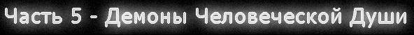
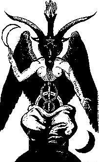
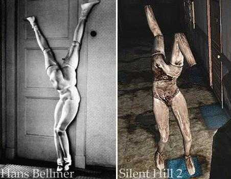

1. Общие комментарии по монстрам - 2. Монстры Silent Hill 1 - 3. Монстры Silent Hill 2 - 4. Монстры Silent Hill 3 - 5. Монстры Silent Hill 4
На протяжении всей Silent Hill-серии в "ином мире" нам приходится сталкиваться с таинственными существами - кошмарными кровожадными монстрами, обитающими в глубинах человеческого подсознания. Какова истинная сущность этих демонов, в чем заключается смысл их существования и какой смысл несет образ каждого из них? В этой части анализа мы постараемся дать ответы на все вопросы, связанные с монстрами серии.
1. Общие комментарии по монстрам
Не поддается сомнению тот факт, что на данный момент SH является сериалом, обладающим наиболее детальной и глубокой проработкой образов "монстров" за всю историю видеоигр. В связи с этим будет целесообразным уделение особого внимания представляющим интерес аспектам создания монстров.
1-1. Принципы дизайна существ
На протяжении всей серии SH можно заметить некоторые закономерности в образах монстров, позволяющие выделить определенные принципы и правила, которых придерживаются художники Конами при создании существ.
а) Антропоморфность
В целях достижения необходимого эффекта ужаса, разработчики, при создании образов монстров, эксплуатируют подсознательные страхи каждого человека. На более ранних стадиях развития общества люди боялись дикой природы, страшных животных - по этой причине монстры и демоны в старину всегда наделялись какими-либо характеристиками различных животных (будь то рога, копыта, хвост, клыки, крылья или шупальца). Но ныне страх человека перед природой утратил свою былую силу - среднестатистическому обитателю города в наше время уже не приходится жить в страхе, что он в любой момент может оказаться жертвой дикого зверя (если не считать страха быть укушенным бездомной собакой); гораздо больше люди боятся попасть под поезд в метро, очутиться в госпитале или попасть под горячую руку гуляющего по городу безумного маньяка. Но больше всего люди в современном обществе боятся... себе-подобных. Изо дня в день на улицах нам приходится видеть сотни и тысячи других людей, - но мы даже не можем вообразить себе, что происходит в голове каждого из них, мы не можем доверять всем, не можем быть уверенными, что за маской обычного гражданина не скрывается жестокий монстр... Каждый встречный человек представляет из себя загадку, источник потенциальной опасности. Именно на этом страхе и играют художники из Конами, наделяя загадочных существ "иного мира" некоторыми человеческими чертами.
"My basic idea in creating the monsters of Silent Hill was to give them a human aspect" - раскрывает нам свою творческую тайну Масахиро Ито. Подобный прием имеет и другую эффективную сторону: при возникновенни необходимости сражаться с монстрами и убивать нападающих, играющий будет отчасти испытывать чувства вины и дискомфорта именно вследствие человекоподобности существ (что способствует достижению желаемого разрабами эффекта).
б) Загадочность
Согласно комментариям Масахиро Ито, кроме себе-подобных, люди боятся всего того, что они невозможно объять разумом ("Human beings harbor a fear of others, and in particular, a fear of that which is impossible to comprehend"). По этой причине монстры также наделяются разнообразными непонятными, гротескными чертами. Скажем, мы видим фигуру, отдаленно напоминающими человека, но вдруг замечаем у нее какие-либо части тела, наличие которых у человека не только невозможно, но и функциональное предназначение которых нам совершенно неясно. В таких случаях увиденное вдвойне шокирует играющего, провоцируя в нем чувство беспокойствия вследствие невозможности сравнить увиденное с чем-то из реального мира, а равно вызывая вполне логичный вопрос "ЧТО ЭТО ТАКОЕ!?". К примеру, фигура палача Pyramid Head'а из SH2 оказала большое впечатление на игроков, отчасти, и вследствие окружающего её ореола таинственности (при виде красной пирамиды на голове человекообразной фигуры, у играющего возникают вопросы наподобие "зачем пирамида нужна?", "это лишь маска?", "кто скрывается под маской?", "каким образом он может видеть сквозь нее?" и т.п.).
в) Символичность
Очередной принцип дизайна существ, тесно связанный с приданием им загадочности. Так как многие монстры представляют собой размытые образы из бредовых фантазий персонажей, то по данным образам мы можем судить о личности "создателя" этих существ. Это напоминает психологический тест, когда доктора дают больному в руки ручку, листок бумаги, и предлагают пациенту проявить художественную свободу - ЧТО именно он отразит в своем рисунке поможет судить о личностных качествах и внутреннем мире пациента. Вот так же и в "ином мире".
г) Отвратность
Если проследить дизайны всех монстров серии, то можно выявить такой характерный для них всех признак, как отвратность. Вызывание у играющего чувства отвращения перед существом является гораздо более важной задачей для разработчиков хоррор-игр, чем это может показаться на первый взгляд, т.к. содействует эффекту шока. Для достижения целей художники дергают за все доступные ниточки: признаки трупного разложения и гниения на телах существ, опухоли, ожоги, содранная кожа и т.п. Для усиления чувства отвращения, авторы игры нередко обращаются к коллективному бессознательному и истории искусства ("to arouse the feeling of disgust in the player, Ito also draws on the collective unconscious, and the history of art" - MoSH3).
д) Сексуальность
В мире Безмолвного Холма любовь сливается с насилием, а смерть становится эротична... Согласно некоторым психологическим теориям, основными инстинктами любого человека являются влечение к жизни (проявляющееся через так называемое "либидо") и влечение к смерти. Каждого человека привлекает и волнует секс и смерть ("Everybody is thinking and concerning about sex and death" - говорит нам Такаяси Сато в MoSH2). Вам когда-нибудь приходилось видеть человеческую смерть своими глазами? Разве подобная сцена не вызывает особо острых ощущений? А какие чувства вызывают у вас сцены секса и эротики? А теперь... что, если мы попробуем смешать оба эти столь противоречивые, но тем не менее весьма интенсивные ощущения воедино? Получается еще более интереснее, не правда ли? Бьюсь об заклад, что все лица, страдающие некрофилией на такой вопрос ответят положительно ^__^ . Вот и создатели SH не отрицают неизгладимого эффекта, производимого на человека одновременным созерцанием сцен секса и смерти, стараясь максимально совмещать подобные сцены в игре ("To make like a death scene. Like somebody died, or monsters died, or if you make that kind of scene... we tried to mix erotic essence" - говорит Такаяси Сато). Особенно ярко это выражено в Silent Hill 2: представьте себе тела мертвых медсестер, лежащие на холодном полу госпиталя - вы только что убили их собственными руками, но тем не менее разве у вас порой не возникает желания заглянуть им под короткую юбку? А убивать их приятно было? Для справки можно привести результаты ныне запрещенного в большинстве стран знаменитого эксперимента в области социальной психологии, произведенного в 1963 году Стэнли Милграмом (так называемый "Тест Эйхманна"), согласно которому, 85% людей испытывают удовольствие и сексуальное возбуждение от причинения страданий своей беззащитной жертве. Секс, смерть, насилие - все это слилось воедино в образах существ. Быть может, создатели игры таким образом дают всем вашим скрытым фантазиям осуществиться в виртуальной реальности игрового мира?
Как мы видим, активное использование создателями различных эффективных психологических приемов при создании монстров содействует возникновению у играющего просто уникальных переживаний и ощущений в процессе блуждания по "иному миру", а также формированию сильных впечатлений от игры в целом. Кошмар одновременно пугает и завораживает...
1-2. Условная типология монстров
Согласно сюжету игры и законам "иного мира", монстров можно условно поделить на три разновидности:
а) Монстры-видения
Своеобразные галлюцинации персонажа, существующие лишь в его подсознательном мире, являющиеся лишь порождением его разума и больных фантазий. Причины их существования могут быть различны - порождения чувств вины и желания приносить себе страдание, проявлением внутренней агрессии, отражение детских страхов в "ином мире"... Данных монстров могут увидеть лишь те люди, которые находятся под воздействием силы альтернативного мира, в котором эти существа обитают.
б) Монстры-люди
Как говорит нам автор сценариев SH2 и SH3 Хироюки Оваку, некоторые монстры вполне могут на самом деле являться обычными людьми, даже, быть может, друзьями и соседями персонажей ("Maybe they are human beings just like you, maybe even your neighbors. What you see might be true or false"). Все относительно - и видение\восприятие окружающего нас мира не является исключением. Именно об этом и говорит Винсент, намекая, что убиваемые главной героиней "монстры" были лишь воспринимаемыми ей в обликах монстров обычными людьми. В качестве примера монстра, на самом деле являющегося человеком, можно привести Миссионера из SH3, который, согласно LM, был воспринимаемым Хизер в образе монстра членом религиозной организации.
в) Монстры-духи
Эта разновидность монстров, подобно предыдущей, тоже представляет собой людей - но на этот раз - умерших и ставших узниками "иного мира". Как мы помним, сознания (души) людей-жертв "иного мира", даже после смерти их физических тел продолжают существовать внутри этого мира, представляя собой бестелесных призраков, обреченных на вечное страдание. Эти сущности в альтернативном мире вынуждены подчиниться правилам, установленным создателем данного мира и принять облики монстров. Так, например, жертвы Уолтера Салливана, нашедшие свою смерть в "ином мире", продолжили там свое существование, приняв облики кошмарных летающих призраков. Или же Лиза Гарланд, ставшая жертвой внутреннего мира Алессы, впоследствии превращается в этом мире в монстра-медсестру.
У читателя может возникнуть вопрос, ПОЧЕМУ при полной очевидности существования в игре монстров, истинная сущность которых различна, мы все же называем выше обозначенную типологию условной. Все дело в том, что мы не можем категорично заявить "так, абсолютно все Клозеры у нас будут монстрами-людьми, все Снифф Доги - монстрами-видениями, а все медсестры - монстрами-духами". Раз уж сами создатели воздержались от столь точных и определенных разграничений в официальной информации, то уделение чрезмерного внимания вопросам разложения всех монстров по строго определенным полочкам лично мне не представляется целесообразным.
2. Монстры Silent Hill 1
Кошмарные существа SH1 представляют собой порождения ненависти к людям и страхов маленькой девочки Алессы Гиллеспи. На формирование их обликов оказали значительное влияние известные книги, сказки, а также религиозные убеждения Далии Гиллеспи. В игре присутствует по нескольку разновидностей в общем-то одинаковых монстров, которые отличаются по сути лишь более страшным внешним видом ("птеродактили" и "собаки"). Играющий может подумать, что когда внутренний мир Алессы набирает силу, то и обитающие в нем существа становятся еще более кошмарными.
2-1.Air Screamer\Night Flutter - 2-2. Groaner\Wormhead - 2-3. Child\Crawler\Mumbler - 2-4. Larval Stalker - 2-5. Puppet Nurse\Doctor - 2-6. Romper - 2-7. Hanged Scratcher - 2-8. Creeper - 2-9. Bloodsucker - 2-10. Split-Head - 2-11. Twinfeeler\Floatstinger - 2-12. Одержимая Сибил - 2-13. Алесса\Инкубатор - 2-14. Бог Алессы\Инкуб - 2-15. Иные существа
2-1. Air Screamer\Night Flutter
Характеристики: птеродактилеобразное существо размерами с человека, атакующее вас мощным клювом и когтистыми лапами. Способность летать является основной силой Эйр Скримера - т.ч. главному герою придется укрываться под навесами и пережидать опасность. Склонно к стайному образу жизни, предпочитает летать группами по пять особей. Встречается на открытых городских пространствах, тем не менее первая битва проходит в кафешке, куда существо проникло в поисках пищи. При усилении мира Алессы, Air Screamer эволюционирует в Night Flutter'а, становясь более кошмарным и приобретая способность видеть во тьме (реагирует на свет фонарика) - теперь его плоть покрыта отвратительными червями...
Метафора: "Воздушный крикун"\"Порхающий в ночи"
Смысл: Одной из любимых книг Алессы был "Затерянный Мир" Конан Дойля. Иллюстрация с изображением птеродактиля оказала влияние на девочку - и образ существа был отражен в альтернативном мире. Уместно будет привести из книги-первоисточника цитату с описанием существа: "И вдруг из этой темноты, из этого ночного мрака со свистом, напоминающим свист аэроплана, к костру ринулось сверху какое-то существо. Перепончатые крылья на миг прикрыли нас, словно пологом, и я успел разглядеть длинную, как у змеи, шею, свирепые, блеснувшие красным огоньком глаза и огромный разверстый клюв, усаженный, к моему величайшему изумлению, мелкими, ослепительно белыми зубами. Секунда - и это существо унеслось прочь..."
Применение: один из самых надоедливых монстров, битва с которыми не приносит ничего хорошего. Призван создавать эффект постоянной погони, поддерживающей игрока в напряжении; не дает расслабиться и почувствовать себя "в безопасности".
2-2. Groaner\Wormhead
Характеристики: существо, напоминающее обгоревшего добермана с ободранной шкурой. По белкам глаз видно, что животное потеряло дар зрения, но тем не менее оно лихо ориентируется на звуки и, в частности, звук выстрела. Появляется на открытых пространствах, особо густо заселена собаками зона у конуры на Levin st. Когда кошмарный мир Алессы набирает силу, это отражается и на монстрах - так, Groaner эволюционирует в более мощного Wormhead'а, голова которого покрыта ужасными червяками.
Метафора: "Скулящий"\"Червеголовый"
Смысл: С самого детства Алесса Гиллеспи испытывала страх перед большими собаками - особенно перед "злой собакой" в переулке на Finney st. и собакой, живущей в конуре на Levin st. Тем не менее, девочке нравилось рисовать извращенные версии этих животных в своем альбоме - в комнате Алессы мы можем видеть рисунки с изображением обглоданной собаки. Именно по этой причине Groaner и стал частью внутреннего мира будущей Богоматери. Тот факт, что доберманы предстают перед нами в искалеченном виде (обгоревшие, ослепшие) связан с теми страданиями, которые пришлось перенести девочке во время ритуала очищения огнем.
Необходимо также отметить, что облик "собак" весьма напоминает кое-каких существ из другого известного ужастика - Resident Evil... Мы можем подумать, что образ страшного существа из Capcom-овской успешной игры оказал значительное влияние на впечатлительных конамиевцев, и был отражен в созданной ими видеоигре - но конечно же это не плагиат, Боже упаси! (*вдоволь постебавшись над Конями, SP злобно хохочет*).
Применение: боязнь собак является довольно распространенной в современном обществе, и Конами уже далеко не первые, кто старается использовать этот человеческий страх в видеоигре.
2-3. Child\Crawler\Mumbler
Характеристики: маленькие человекоподобные существа, обитающие в школе, парке развлечений и канализации. Они хватают вас за ноги и начинают резать ножами или же мощными когтями. В различных версиях SH1 присутствуют различные разновидности этих монстров ("crawler", "mumbler").
О процессе создания "детей": Образ "ребенка" постоянно менялся из-за проблем с цензурой и Комитетом Этики CESA, в результате чего появилось несколько разновидностей образов монстров. Тот факт, что Комитет аж трижды проявлял недовольство обликом монстра, для видеоигры можно расценить как своеобразный рекорд.
Ребенок#1: Первоначально создатели предполагали ввести в игру маленьких монстров, ОЧЕНЬ СИЛЬНО напоминающих детей (кодовое имя "CHILD#1"), но Комитет Этики подобное не одобрил (еще бы, убийство маленьких детей в игре!).
Если посмотреть первоначальные эскизы обнаженного "ребенка", то становится очевидна половая принадлежность "детей" (это девочка ^__^). Вы также можете видеть "ребенка#1" на презентованных на Е3 в 1998г. ранних скринах Silent Hill1.
Ребенок#2 (Crawler): Впоследствии под давлением Комитета Этики, разработчики сделали кожу "детей" мертвенно-бледной (кодовое имя "CHILD#2"), добавили им черты японского мифологического безликого призрака нопперабу (обратите внимание, что у этих монстров нет лиц) и сделали "детский" первичный половой признак чуть менее заметным посредством затемнения данной части фигуры. Именно в таком образе "дети" и появляются в моей версии SH1 (да-да, мне повезло заиметь наименее зацензуренную версию SH1 - завидуйте! ^__^).
Ребенок#3: Когда и второй вариант "ребенка" был раскритикован, создатели решили опять внести изменения, сделав монстра ЕЩЕ МЕНЕЕ человекоподобным и сменив цвет кожи на зеленый (кодовое имя "CHILD#3"), о половой принадлежности теперь даже и не шло никакой речи. В таком облике дети и появляются в зацензуренном Североамериканском издании игры. Тем не менее, даже такой вариант не понравился цензорам на родине игры - в Японии.
Ребенок#4 (Mumbler): После того, как создатели убрали у монстра все мыслимые человеческие черты и снабдили его огромными когтями и ртом на всю голову (кодовое имя "CHILD#4"), это существо появилось в Японском издании игры. Бррр, первоначальный вариант с обнаженными маленькими "девочками" мне лично был симпатичен куда больше!
Тень Crawler'a: Большие тени, появляющиеся в "Нигде", являются призрачным вариантом второго типа "детей" - они более живучи и плохо заметны. Несмотря на то, что Crawler был вырезан из северо-американской и японской версий игры, цензоры все же оставили в этих версиях "призрачный" вариант данного вида монстров.
Метафора: "дитя"\"крадущийся"\"чавкающий"
Смысл: Монстры в образе детей являются проявлением страха Алессы перед одноклассниками. Тот факт, что они атакуют вас с ножами представляет собой воспоминание о том, как школьники ВЫРЕЗАЛИ на парте девочки ругательства (естественно, делали они это НОЖАМИ - а чем же еще!?). Наличие у "детей" таких же петель на шеях, как и у трупов церемониальных робах, может быть истолковано либо как влияние религиозных убеждений матери на Алессу, либо как скрытое желание девочки принести своих одноклассников в жертву демоническому Богу. Более звероподобные разновидности монстров ("mumbler") являются смешением воспоминаний Алессы об одноклассниках с образами демонов и маленьких животных из сказок.
Применение: вид ребенка в школе должен сбивать играющего с толку, вселяя в него сомнения наподобие "Почему они на меня нападают? Могу ли я выстрелить в ребенка?". Также они чрезвычайно затрудняют передвижение в особо узких коридорах.
Подтекст: Сцены, когда маленькие вооруженные карманными ножами "ДЕВОЧКИ" (см. первичные эскизы) внезапно хватают взрослого главного героя за ноги, дотягиваясь лишь до пояса и при этом подозрительно вздыхая и чавкая, не могут не взбудоражить воображение (а каким образом ТАКОЕ прошло цензуру и не было вырезано!?). Может, создателям следовало все же черпать чуть меньше вдохновения из хентайных жанров японской анимации?
2-4. Larval Stalker
Характеристики: маленькие тени, появляющиеся на протяжении игры в школе и парке развлечений, которые не способны атаковать вас. Исчезают только после хорошего пинка. По определенным причинам при их появлении слышится писклявый смех.
Происхождение: после того как Комитет Этики CESA дал запрет на введение в игру "ребенка#1", Конями сделали ход конем и ввели в игру неагрессивного призрака, являющегося лишь тенью запрещенного "ребенка".
Метафора: "Мелкий преследователь"
Смысл: Несмотря на то, что "мелкие преследователи" вас не атакуют, они издают жутко раздражающий писклявый смех (из-за которого их так и хочется порубить на куски). Данный вид "монстров" представляет собой отражение воспоминаний Алессы о том, как над ней насмехались в школе. Тот факт, что вы способны давить их, как жалких паразитов, может быть интерпретирован как проявление желания униженной и оскорбленной Алессы дать отпор обидчикам.
Применение: присутствуют для поднятия напряжения. Скажем, входите вы в пустую комнату и слышите, что радио реагирует на монстра - вы осознаете, что в комнате кто-то присутствует, но не видите врагов, что вызывает чувство страха, - а на самом деле это всего лишь практически безвредный Larval Stalker.
Секрет: если вы используете Аглаофотис на призраке ребенка в парке развлечений, то случится... Впрочем, если я расскажу вам, что именно произойдет, то это уже перестанет быть *секретом* - видимо, вам придется испытать самим.
2-5 Puppet Nurse\Doctor
Характеристики: сотрудники госпиталя, одержимые вселившимся в их тела мистическим существом, управляющим их волей (вы можете видеть на их спинах ужасные горбы\наросты). Хватают вас и атакуют довольно опасными скальпелями. Ареал обитания - госпиталь, нигде. В игре присутствует много типов медсестер - голубая блондинка, голубая брюнетка, зеленая блондинка... А еще в госпитале можно встретить одержимых докторов. Выбирайте на вкус.
Метафора: Медсестры-марионетки\Доктора-марионетки
Смысл: отражение страха Алессы перед работавшими в госпитале людьми. Тот факт, что в телах одержимых медсестер и докторов обитает некое существо, связан с Алессиным убеждением, что в ее собственном теле находится существо - "Бог".
Одержимые Алессиными демонами медсестры перед гибелью вздыхают, будто смерть приносит им облегчение. Утверждение медсестры Лизы Гарланд о том, что она по сути такая же, как и все остальные одержимые медсестры, позволяет нам лучше понять истинную природу данного вида монстров...
О докторах: несмотря на то, что медсестры появляются в последующих частях игры (их появление SH2 и SH3 может быть объяснено влиянием мира Алессы на силу города), образ одержимого доктора более использован не был. Мы можем подумать, что отсутствие докторов в последующих частях является данью создательского уважения к "иному миру", либо последствием непопулярности данного вида монстров у игроков. Еще бы! Кому интересны какие-то там доктора, когда вокруг разгуливают МЕДСЕСТРЫ!?
Применение: у некоторых людей присутствует стойкая боязнь работников госпиталей, вызванная ассоциированными с этим местом переживаниями. Особенно ярко это выражено у лиц, которым приходилось переносить медицинские операции (вследствие стресса, а также терзавших их перед операцией размышлений наподобие "а что, если врач допустит ошибку?"). Поэтому медсестры-убийцы являются частыми персонажами различных хорроров (особенно трешевых).
Подтекст: по определенным причинам, такая разновидность монстров как "медсестры в юбках" всегда пользуется большим спросом среди мужского играющего населения. Кстати, предсмертные вздохи медсестер SH1 звучат весьма неплохо ;)
2-6. Romper
Характеристики: человекообразное существо, передвигающееся быстрыми прыжками и обитающее в деловом и курортном районах. Оно напрыгивает на вас, шумно пыхтя, подминая под себя и не давая выбраться.
Метафора: "Прыгун"
Смысл: Согласно LM, Ромпер является отражением страха Алессы перед взрослыми людьми.
Применение: быстр, настырен, неприятен, умеет временно обездвиживать жертву.
Подтекст: учитывая особенность атаки Ромпера, играющий также может подумать, что в данном случае имел место, в частности, и страх Алессы быть *изнасилованной* взрослыми людьми.
2-7. Hanged Scratcher
Характеристики: зеленое насекомоподобное животное, обитающее в канализациях. Использует в качестве оружия длинные лапы с когтями-крючьями, обладает способностью к передвижению по потолкам.
Метафора: "Висячий царапка"
Смысл: слияние представлений Алессы о некоторых разновидностях ненавистных ей насекомых, отраженное в ее мире в образе страшного монстра.
Применение: Внезапность атаки монстра отлично сказывается на напряженности игрового процесса, держа играющего в страхе и каждый раз пугая его досмерти.
2-8. Creeper
Характеристики: огромное тараканообразное насекомое, встречающееся в школах, больницах и канализациях. Недостаток силы его атак компенсируется большой скоростью, возможностью реагировать на свет, а также большим количеством сих тварей.
Метафора: "Ползучий"
Смысл: Таракан "Creeper" является отражением Алессиной нелюбви к насекомым (вспоминаем ее коллекцию мертвых бабочек). Согласно LM, тот факт, что таракан также появляется в SH2 свидетельствует о воздействии силы города на Джеймса.
Применение: кто любит тараканов? Да никто не любит не любит тараканов! Исходя из этого общеизвестного факта, создатели и поместили огромного раздражающего своей скоростью и вездесущностью таракана в игровой мир.
2-9. Bloodsucker
Характеристики: несколько змеевидных щупалец, питающихся людской кровью. Встречается в госпитале.
Метафора: "Кровосос"
Смысл: Кровососущие щупальца "Bloodsucker", согласно комментариям авторов, отражают страх Алессы перед змеями и подобными ползучими тварями. Как мы помним, рядом со школой, где училась Алесса, водились змеи (вспоминаем дорожные знаки, предостерегающие о змеях), т.ч. у девочки было много простора для больных фантазий и страхов. Кроме того, в городе находился огромный стенд с изображением госпитального пакета с кровью крупным планом. Мы можем подумать, что когда в подсознании Алессы страх перед змеями смешался с впечатлениями от увиденного стенда, родился образ змеевидных кровососов.
Также Bloodsucker может быть истолкован как образ, созданный из негативных переживаний от переливания крови: в палате Алессы стоит капельница - возможно, в бреду девочке казалось, что кровь ей не переливают, а наоборот - выкачивают (благодарю st-MK за теорию о возможной связи образа "кровососа" с воспоминаниями Алессы о переливании крови).
Применение: в палате 204 загораживают проход к необходимой для решения головоломки табличке "Безумного Шляпника".
Подтекст: так называемые "хентайные тентакли" - неизменный атрибут наиболее откровенных творений в области японской анимации, засевший глубоко в подсознание каждого японца и, по всей видимости, отраженный разрабами в созданном ими игровом мире ^__^ . Не удивительно, что данный образ будет использован и в последующих частях серии.
2-10. Split-Head
Характеристики: непрошибаемый ящер огромных размеров с вертикально разделенной головой, которому даже ваши выстрелы из дробовика не покажутся больнее комариных укусов. Единственное его слабое место - это пасть.
Метафора: "Раздельноголовый"
Смысл: Ящер "Split Head" представляет собой отраженный в подсознательном мире девочки образ чудовища из прочитанной ей в школьной библиотеке сказки об охотнике и ящере (эту сказку читал и Гарри). На этом существе держится значительная часть силы "иного мира", поэтому после его уничтожения, кошмарный мир временно отступает (до тех пор, пока страхи Алессы снова не набирают силу). Идея "разделенности" и дальше будет использоваться в игровой серии - она символизирует разделенность души Алессы.
Применение: босс школы.
Подтекст: на мой личный взгляд ящер вряд ли несет какой-либо сексуальный подтекст. Тем не менее, некоторые особо наблюдательные фэны убеждены, что монстр олицетворяет собой женское влагалище (выражаю благодарность st-MK за столь оригинальную версию). Что ж, если мы вспомним вертикальные "губки" монстра, которые раскрываются перед нашим взором (после того, как протагонист немного потеребит их шотганом), обнажая наиболее чувствительную часть существа - окруженное розовой плотью нежное отверстие, куда и необходимо точно попасть главному герою для победы, то подобная трактовка действительно начинает казаться вполне правдоподобной...
2-11. Twinfeeler\Floatstinger
Характеристики: огромный червяк с двумя усами-антеннками, обладающий способностью нападать из-под земли. После поражения в торговом центре, он эволюционирует в гигантского мотылька, умеющего больно жалить и выпускать облака яда.
Метафора: "Двуусый"\"Летучее Жало"
Смысл: Мотылек "Floatstinger" является отражением звезды коллекции Алессы (огромной бабочки, висевшей на отдельном щитке - мы можем видеть ее в SH3) в ее внутреннем мире. Тот факт, что червяк после поражения ПЕРЕРОЖДАЕТСЯ в бабочку, и лишь после победы над его РЕИНКАРНАЦИЕЙ тьма кошмарного мира временно уходит, *определенным образом* связан с судьбой самой Алессы.
Применение: подбоссок и босс делового района.
2-12. Одержимая Сибил
Характеристики: обитающая на детской карусели одержимая демоном сексапильная блондинка в полицейской форме и черных кожанных штанах, атакующая вас с использованием огнестрельного (пистолет на 11 зарядов) и холодного (карманный нож) оружия. На спине Сибил заметно кровавое пятно, напоминающее о наростах у одержимых медсестер...
Смысл: В парке развлечений на решившую помочь Гарри полицейскую сзади нападает монстр - и Сибил окончательно попадает под влияние силы "иного мира"; некогда зеленые глаза девушки наливаются кровью, а власть над ее сознанием берет бешеная ненависть Алессы по отношению ко всем людям... Поведение служительницы закона полностью меняется: когда подоспевший Гарри находит Сибил сидящей в инвалидном кресле на детской карусели, одержимая девушка нападает на него, выстреливая в Мэйсона из пистолета - даже расстреляв в писателя все оставшиеся 10 пуль, Беннетт все равно отчаянно продолжает атаковать главного героя (уже руками и ножом), что отражает глубину охватившего ее разум чувства всепоглощающей ненависти... Вы можете либо убить Сибил (сцена ее смерти действительно впечатляет), либо изгнать из ее тела злого демона посредством использования найденного в госпитале Аглаофотиса.
Применение: босс курортной зоны. Особый интерес битве придает тот факт, что вы сражаетесь со своей союзницей.
2-13. Алесса\Инкубатор
Характеристики: Святая Алесса\"Инкубатор" является плодом слияния реального физического и астрального тел девочки. Богоматерь окружена магическим полем и управляет молниями и огнем.
Метафора: "Инкубатор".
Смысл: Название "Инкубатор" связано с тем фактом, что девочка несет в себе Бога - действительно, для своей матери она была лишь "инкубатором". Святая Алесса одета в белое платье (символизирующее религиозную чистоту; в азиатских культурах белый цвет также символизирует смерть), а ее способность к управлению огнем в своем мире *определенным образом* связана с ритуалом очищения, проведенным Далией в отношении своей дочери 7 лет назад.
Применение: последний босс в контексте концовок "bad" и "bad+". Служит последней преградой для игрока. Сможете ли вы выстрелить в девочку, наполовину являющуюся вашей любимой дочерью?
2-14. Бог Алессы\Инкуб
Характеристики: крылатое божество с головой рогатого козла, молочными железами и эрегированным мужским половым органом (см. концепт-арты разработчиков), рождающееся после использования на Алессе Аглаофотиса и повелевающее молниями и огнем.
Метафора: "Инкуб, демон из сновидений"
Смысл: Рождающийся Бог является именно тем демоном, которого мы видели на иконе в иной церкви, на рисунках Алессы и настенных каракулях в темной комнате. Это отражение вбитых в голову Алессы религиозных убеждений, а равно ненависти девочки ко всему миру.
Религиозные истоки: При детальном рассмотрении становится совершенно ясно, что Бог Алессы является чем-то средним между такими мифическими демонами как Бафомет, Инкуб и Самаэль. Так, Бафомету поклонялись ведьмы в средние века - а изображался демон в виде крылатого существа с головой рогатого козла и женским телом (в точности повторяет облик Бога). Инкуб характеризуется как "демон из снов" (что вполне вписывается в сущность Бога) и обладает солидным мужским достоинством, также в LM создатели упоминают Бога Алессы под именем "Инкуб". А Самаэль, в свою очередь, является падшим ангелом смерти, что сходно с функциональным назначением Демона в мире Алессы (кроме того, Бог Алессы связан с образом Знака Самаэля\Печати Метатрона). Далия добилась своей цели - благодаря материнским стараниям, ее послушная дочь начала ненавидеть всех людей, желать их смерти. Но постоянные страдания девочки обусловили суицидальность ее характера - "It would be better for "myself" to die. After all, it's nothing to be afraid of..." - Алесса хотела освободить себя от боли и страданий, которые ей приносили окружающие ее люди, да и сама жизнь. А кто такой Самаэль? - на самом деле это ангел смерти. Все сходится. Т.е. Алессина боль, ненависть и желание смерти нашли отражение в мире Алессы в образе ангела смерти, который (согласно имени и статусу) должен принести смерть всем ненавистным людям и избавить Алессу от мучений жизни.
Элифас Леви, изображение Бафомета - сравните с Богом Алессы

Применение: последний босс в контексте концовок "good" и "good+". Служит последней преградой для игрока. Сможете ли вы одолеть самого Бога?
Секрет: если вы начнете битву с Богом, не имея при себе ни одного патрона для огнестрельного оружия, то Демон испугается безумного Гарри, полезшего в бой с голыми руками, и умрет без посторонней помощи ^__^
Подтекст: сексуальный подтекст облика Бога Алессы становится ясен с первого взгляда (у девочки, оказывается, была богатая фантазия). А, согласно мифологии, Инкуб ("Incubus" - буквальный перевод "ложиться на") - демон, приходящий к женщинам во время сна и совокупляющийся с ними - в результате подобного слияния, согласно поверьям, обязательно должна была родиться ведьма...
2-15. Иные существа
а) Личинки
Встречаются лишь один раз за игру - пожирают тело мертвого человека в торговом центре перед встречей с Twinfeeler'ом. Не опасны. Тем не менее на личинок реагирует радио и прицел (но стрельба по существам ничего хорошего вам не принесет кроме морального удовлетворения). Существование данного вида монстров в мире Алессы связано с нелюбовью девочки к червям.
б) Демон-паразит
Проникает в человеческое тело, начиная управлять волей своего "инкубатора". Именно этот монстр живет в телах медсестер и докторов, а также в теле Сибил - мы можем увидеть его в заставке, следующей за использованием на полицейской Аглаофотиса. Умирает от одного хорошего пинка. Является отражением переживаний, связанных с Алессиным убеждением в том, что в ее теле живет и развивается Бог.
в) Монстр в холодильнике
Встречается в "Нигде" и может убить вас мгновенно, если вы не запрете холодильник, из которого вытащили Клинок Мельхиора. Проявление необоснованных детских страхов - мы можем подумать, что маленькая Алесса боялась холодильников, считая, что внутри прячется кто-то страшный. А, может, мать просто когда-то говорила Алессе что-нибудь наподобие "не забывай закрывать за собой холодильник, а не то... гммм... эммм... тебя убьет страшный монстр"? ЛОЛ.
г) Тела в ритуальных одеждах
Эти висящие на стенах трупы сложно назвать монстрами в полном смысле этого слова, тем не менее они определенным образом связаны с Валтиэлем из SH3. Трупы на стенах являются отражением знания Алессы о темной религии и истории города - они носят те же ритуальные одеяния, что ПирамидХэд (из SH2) и Валтиэль (из SH3). Правда заключается в том, что это церемониальные одежды, использовавшиеся членами культа с давних времен. В школе встречается два вида трупов в церемониальных одеяниях: первые (те которые на стене) просто одеты в церемониальные робы и выглядят эдак величественно, у вторых петля на шее, завязанная сзади на спине на манер лямки бюстгалтера - их часто можно встретить повешенными. Можно подумать, что два вида трупов подразумевают "палачей" и "мучеников".
д) Неиспользованный монстр 1
Первоначально разработчики хотели ввести в игру монстра, который бы атаковал вас, обволакивая, подобно мешку, конечности персонажа. Но так как подобную идею реализовать в рамках игрового процесса было проблематично, монстр не был использован в финальной версии игры. Зарисовки можно найти на Lost Memories DVD.
е) Неиспользованный монстр 2
Отвратительный крылатый насекомоподобный монстр, который не был использован в финальной версии игры. Встречается лишь на product pictures в Lost Memories DVD.
3. Монстры Silent Hill 2
Создания, которых видит главный герой SH2 (Джеймс Сандерленд) на протяжении пребывания в "ином мире" по большей части являются порождениями его подсознания, отражениями чувства вины за убийство безнадежно больной жены. Сексуальная ориентированность большинства существ может быть расценена как следствие неудовлетворенных естественных потребностей протагониста.
Согласно комментариям разработчиков, облики многих монстров второй части игры были навеяны им творчеством ирландского художника и философа Фрэнсиса Бэкона, питавшего страсть к изображениям деформированных человеческих тел. Его высказывание "There is no excellent beauty that hath not some strangeness in the proportion" явилось своеобразным лейтмотивом для создания существ SH2.
3-1. Lying Figure - 3-2. Mannequin - 3-3. Pyramid Head - 3-4. Bubble Head Nurse - 3-5. Creeper - 3-6. Mandarin - 3-7. Abstract Daddy - 3-8. Flesh Lip - 3-9. Mary - 3-10. Unseen Prisoner
3-1. Lying Figure
Характеристики: Полуразложившаяся человеческая фигура в подобии смирительной рубашки из материала, напоминающего резину. Создается впечатление, что руки существа будто бы связаны за спиной. Питается трупами людей. Атакует посредством выдыхания ядовитого тумана из отверстий на теле и голове. Странные телодвижения загадочного создания напоминают бьющего в агонии пациента, а походка - пьяного человека. После получения достаточных повреждений существо падает на землю и в панике будет предпринимать попытки ползком скрыться от главного героя, пока вы раз и навсегда не окончите его существование. Обитает в городе, WSA и BCA, тюрьме, лабиринте, отеле и доме Эрнеста - в общем, везде кроме госпиталя (ранние игровые скрины свидетельствуют, что изначально разрабы планировали также поместить данного монстра в Брукхэвен, но почему-то отказались от этой затеи. Странно - ведь госпиталь лучше всего подходит в данному типу существ).
О создании: Идея о создании столь причудливого монстра возникла у Масахиро Ито, когда к нему однажды зашел друг-программист, также работавший в офисе Конами. Ито-сан заприметил своего знакомого издалека: тот, слушая свой Walkman, двигался эдакой "модной походочкой", держа руки в карманах, а на голове был балахон. И тогда дизайнера осенило - вот ОНО! Осталось лишь перенести впечатления в игровой мир. Конечно, этот случай был почти анекдотическим, но именно так внезапно и приходит вдохновение.
О начальных зарисовках: облик LF не был создан в один момент по мановение волшебной палочки, а формировался долгое время, претерпевая различные изменения.
-- Изначально LF должен был напоминать женскую фигуру (обратите внимание на грудь - кстати, мы понимаем, что Lying Figure - это именно "она", что немаловажно), "одетую" в странную белую куртку с карманами, полностью закрывавшую лицо, и красные женские сапоги (что оставляло обнаженной самую интересную часть тела). Планировалось также оставить существу рот и длинный красный язык, чтобы оно могло питаться трупами. Но этот вариант дизайна был слишком "жестким" и вряд ли имел шансы попасть в финальный вариант игры (как не попали в SH1 маленькие обнаженные "дети" в своем оригинальном обличии).
-- Далее опять были внесены изменения. Теперь LF уже была женской фигурой, на верхнюю часть которой был натянут завязанный черный мешок (что-то среднее между мусорными пакетами и мешком для трупов), заодно играющий роль мини-юбки и стесняющий движения. По шрамам на ногах нетрудно догадаться, что тело представляет собой расчлененный и заново сшитый труп...
-- И лишь когда у существа были убраны основные человеческие черты, а также слишком явные намеки на его пол, Lying Figure наконец-то была включена в игру.
Метафора: "Лежачая Фигура"
Значение: Некоторые могут истолковать фигуру бьющегося в агонии пациента как символ страдания Джеймса. Тем не менее, если вспомнить, что "Лежачая Фигура" является женщиной, то куда более правдоподобной выглядит версия, что LF символизирует Мэри в ее последние дни жизни, а равно страдания Джеймса, связанные с созерцанием своей жены в таком состоянии.
Символическая связь "Лежачей Фигуры" и Мэри: Нетрудно догадаться, что облик данного монстра некоторым образом связан с женой Джеймса. Давайте проследим основные моменты:
-- Тот факт, что фигура напоминает женщину-пациента ("A being that represents the image of a patient writhing in agony" - LM) ясно отсылает нас к судьбе госпитализированной безнадежно больной жены Джеймса. "Between the disease and the drugs, I look like a monster" - сетовала Мэри на свой облик. Могло ли получиться так, что когда заболевшая Мэри сравнивала себя с монстром, ее самокритичная фраза засела в подсознании Джеймса, и связанные с ней переживания нашли отражение в "ином мире"?
-- Единственной атакой (хотя это и атакой-то сложно назвать) Лежачей Фигуры является ядовитый кашель. Как мы помним, с постепенным прогрессированием заболевания, у Мэри также начался сильнейший кашель. Очевидно, что особенность атаки монстра является отражением воспоминаний Джеймса о кашле жены.
-- Связанные руки могут быть истолкованы как символ бессилия или беззащитности - лежачая фигура не может оказать вам значительного сопротивления. Она лишь жалко кашляет (каждым приступом кашля принося боль Джеймсу), ожидая своей незавидной участи...
-- Повалившись на пол, существо отчаянно пытается спастись от вас, из последних сил цепляясь за жизнь. Быть может, это следствие бессознательной памяти Джеймса о моменте убийства жены, когда он лишил жизни лежащую на кровати беззащитную Мэри?
Значение первой встречи с "Фигурой": Первый раз Джеймс встречает LF под мостом на Vachss rd (куда попал, следуя за странным силуэтом в тумане, который в отдалении напоминал пьяного человека) - во тьме он различает ужасную фигуру, пожирающую труп (по крайней мере играющему может показаться, что она труп *пожирает*). Что бы сделал нормальный человек, увидев ТАКОЕ? С воплями выбежал бы из-под моста! Но Джеймс поступает совершенно иначе - в шоке от увиденного он лишь отдирает палку с гвоздями и нападает на напоминающую ему о жене фигуру, жестоко убивая её (кстати, он сначала убивает - и только потом проверяет, не человек ли это). Быть может, Сандерленд убил существо именно из-за того, что оно пробуждало в нем болезненные воспоминания о совершенном преступлении? Вдвойне символичной эта сцена становится, учитывая, что после убийства фигуры Джеймс через помехи слышит по радио голос убитой жены "James, I'm here... Why did you killl me?". И втройне символичной - учитывая, что если прийти под мост ночью, то вы увидите, что ворота заперты и обмотаны полицейской лентой, будто бы тут произошло убийство...
Лежачая Фигура и трупы: в городе можно найти несколько трупов с лицом LF, но одетых в куртку и джинсы (что напоминает об одежде самого Джеймса). Что бы это могло значить? ;)
Применение: Lying Figure может вызвать разве что жалость у играющего - этот вид существ медлителен и практически не опасен на открытых пространствах, что делает борьбу с ним совершенно не обязательной. В коридорах же всегда можно использовать огнестрельное оружие, практически исключающее вероятность получения повреждений... В любом случае, вам должно быть стыдно, если вы просто так убиваете беззащитных Лежачих Фигур!
Подтекст: На ранних артах сексуальный подтекст был чуть более очевиден, в финальной же версии самое интересное было удалено - тем не менее, Пирамид все равно не брезгует использовать Фигуру для удовлетворения своих сексуальных потребностей (см. сцену изнасилования Фигуры перед первой битвой с PH).
3-2. Mannequin
Характеристики: Две нижние половины женского манекена, сшитые вместе. Они притворяются неодушевленными, но при приближении главного героя пытаются внезапно ударить его "верхней конечностью". Реагируют на свет. Практически вездесущи...
Метафора: "Манекен"
Значение: Согласно LM, Манекен представляет собой олицетворение естественных (в том числе и сексуальных) нужд и потребностей Джеймса, осуществление которых зачастую приводит к чувству вины (так, например, похотливый Джеймс чувствует вину из-за того, что когда-то мечтал о Марии). Поэтому пирамидоголовый палач обычно всячески издевается над манекенами, что символизирует "подавление естественных потребностей".
Значение первой встречи с Манекеном: Впервые мы встречаем Манекена в комнате 205 Woodside apts. Зайдя в комнату, мы видим, что она вся завалена частями манекенов, а посреди стоит манекен без головы и конечностей в платье Мэри - искомой жены Джеймса... Фонарь на шее этого манекена символизирует, что Мэри и есть та светлая цель, к которой стремится главный герой. Но есть одна проблемка - посмотрите на манекен в платье... Ведь "она" неполноценна - у "нее" нет головы, рук, ног и той части, без которой те самые "естественные потребности" удовлетворить будет, прямо скажем, несколько проблемно... Очевидно, что кроме доброй-светлой рафинированной Мэри, Джеймсу нужно еще что-то... И тут из тьмы появляется фигура Манекена - две нижних половины женских куклы, сулящие возможность удовлетворения "естественных потребностей" аж в двойном размере! Убивая Манекенов, Джеймс подавляет свои желания, тем самым в какой-то мере издеваясь над своей человеческой сущностью. Он все еще пытается быть верен покойной жене...
О создании: нетрудно догадаться, что образ Манекена был навеян творчеством Ганса Беллмера.

Применение: Вводя подобного монстра в игру, создатели апеллируют к распространенному людскому страху перед куклами и манекенами ("а вдруг *оно* оживет!?"), а кроме того заставляют незадачливого игрока при виде оживающего Манекена каждый раз впадать в ступор, задаваясь вопросами наподобие "оно живое что-ли!?"
Подтекст: Тут все достаточно очевидно. Пара скрепленных нижних частей манекенов олицетворяют что-то наподобие идеальной секс-куклы - не удивительно, что "естественные потребности" главного героя нашли себе отражение именно в такой форме. Кроме того, в сцене издевательств палача над Манекенами играющему может показаться, что куклы совокупляются друг с другом перед смертью.
3-3. Pyramid Head
Характеристики: Человекоподобное существо в странном одеянии, отдаленно напоминающем халат патологоанатома, на голове у которого находится огромная красная пирамида предположительно изготовленная из металлического материала, покрытого красящим веществом красного цвета неизвестного нам происхождения (запекшейся кровью!?). По определенным причинам оно постоянно тенью следует за главным героем и, в отличие от обычных монстров, не может быть повержено - вступив в битву, мы можем лишь замедлить его продвижение или временно отогнать от себя. Каждое появление Пирамиды неразрывно связано со смертью и страданием...
Метафора: "Пирамидоголовый"
Истинная сущность палача: Несмотря на то, что Джеймс Сандерленд вследствие испытанного шока забыл об убийстве своей жены, и болезненные воспоминания были вытеснены в область бессознательного, в глубине души клерка все еще продолжало жить чувство вины, медленно разрастаясь и пожирая главного героя изнутри... И это неосознанное чувство вины и желание покарать себя за совершенные грехи принимает в "ином мире" облик палача, неустанно преследующего главного героя. Пирамида, как отражение деструктивной, мазохисткой части личности Джеймса (своеобразный "Танатос"), причиняет ему боль за все грехи: за то, что отнял жизнь Мэри, чтобы освободиться самому, что он забыл о своем грехе, что в его фантазиях когда-то фигурировала иная выдуманная женщина кроме жены... Раз за разом своими действиями Пирамида как бы напоминает Джеймсу о жестокой правде, от которой главный герой пытался скрыться в своих заблуждениях, о совершенном преступлении - чтобы доставить страдание Сандерленду... И если это подсознательное всепоглощающее чувство вины не будет наконец повержено, то оно вполне может загнать Джеймса в могилу...
Истоки облика Пирамиды: Изначально, одеяние Пирамиды было униформой городских палачей, осуществлявших ритуальные казни и жестокие "Белые и Красные банкеты для Богов" (они носили робы Валтиэля и красные балахоны на голове, что было позаимствовано из религии индейцев). Почему же во внутреннем мире Джеймса его чувство вины отразилось в столь гротескном облике? Дело в том, что за 3 года до событий SH2, когда Джеймс с женой приехал в Безмолвный Холм, он посетил историческое общество SH HS и увидел там картину "Misty Day Remains of the Judgement" с абстрактным изображением властного палача на фоне подвешенных в металлических каркасах жертв казни - и картина оказала на главного героя такое сильное впечатление, что образ Пирамидоголового палача навсегда засел в подсознании Джеймса и 3 года спустия, ассоциировавшись с возникшим из-за убийства жены чувством вины, отразился во внутреннем мире клерка ("Three years ago when James visited this town, that figure overlapped with his own feelings of guilt, and then later appears as a representation of his desire for punishment in the otherworld created by his subconscious" - говорит нам LM).
Антропоморфность: PH разительно напоминает человека с ужасной маской на голове - т.ч. у играющего на ранних стадиях игры может даже возникнуть идея, что монстр является реальным кровожадным маньяком, блуждающим по городу в поисках новых жертв - но, конечно же, это не так - Пирамида представляет собой лишь отражение Джеймсовых заблуждений. Тем не менее, мысль о том, что угроза исходит именно от *человека* (или *чего-то-что-напоминает-человека*) вызывает куда больший страх у играющего (дизайнеры в очередной раз используют страх человека перед себеподобными).
О создании: Изначально Масахиро Ито хотел создать монстра, лицо которого было бы скрыто от играющего, что придавало бы существу таинственность. Первоначально у Создателя получилась лишь человеческая фигура в маске - но Ито-сан решил пойти дальше, заменив обычную маску красной пирамидой огромных размеров (в сети одно время ходили слухи, что художнику не понравился созданный им первоначальный вариант монстра, и зачеркнув голову своему творению, Ито заметил, что получилось нечто вроде пирамиды - вот тут на него и снизошло озарение. Правда, лично мне не доводилось встречать каких-либо объективных доказательств этой легенде). Изображение палача без своей пирамиды вы можете найти на диске "Art of Silent Hill". Позже палач был "одет" в ритуальное одеяние, напоминающее о висящих на стенах в школе трупах из Silent Hill1.
Значение пирамидального головного убора: исторически красные балахоны палачей были связаны с особым почтением к треугольным и пирамидальным геометрическим фигурам у проживавших на территории Америки индейцев, а также с обликом одного из индействих Богов по имени Кзучилпаба\Кзучилбара. В SH2 красная пирамида не только скрывает лицо палача, создавая ощущение чего-то непонятного, и, согласно комментариям разрабов в MoSH2, острыми как бритва углами подразумевает опасность и возможность боли, но и наиболее полно раскрывают роль данного монстра в сюжете игры ("The triangle has right angles and acute edges, their sharpness suggests the possibility of pain, and the triangle shape also helps explain the monster's role in the game" - рассказывает Масахиро Ито в интервью). Стоит отметить, что красный цвет в SH-серии символизирует кровь и возрождение.
Кто скрывается под маской палача?: Фигура Пирамиды оставила после себя большое количество вопросов среди игроков - одним из этих вопросов является "кто же скрывается под маской палача!?". Учитывая, что ПХ является отражением СОБСТВЕННОГО желания Джеймса к самобичеванию, его собственного чувства вины, мы можем сделать вывод, что Джеймс сам в определенной мере является своим собственным палачом. Значит ли это, что под ужасной причудливой маской скрывается лицо САМОГО ДЖЕЙМСА!?
Связь Пирамиды с красными листочками-сэйвами: Как мы видим из ролика "Fukuro", где в красной "маске" Пирамиды вырезано квадратное отверстие (после чего остается темная ДЫРА), красные квадратные сэйвы, на которых главный герой "сохранялся" на протяжении игры как бы являются частями головы Пирамиды! Иными словами чувство вины не только приносит боль главному герою, но и заставляет его двигаться дальше, не позволяя умереть в "ином мире", пока он наконец не осознает Абсолютную Истину о своих грехах.
Значение татуировки: на левом плече мускулистого палача имеется таинственная татуировка, напоминающая число "96"(особенно хорошо это заметно на концепт-арте Пирамиды с сайта www.konami.jp). Относительно этой татуировки бытуют различные версии, приведу наиболее интересные из них:
-- Быть может, это число представляет собой количество жертв Пирамиды?
-- В религии города верующим присваивалось секретное имя, представляющее собой число (вспомним хотя бы психа, записывающего кровью на стене свое тайное имя в виде 4-хзначного числа, или Уолтера, нумерующего всех своих жертв - по аналогии с числом Зверя) - возможно, "96" - это тайное религиозное "имя" палача?
-- Число "96" может быть истолковано как две перевернутых девятки... правда, вряд ли такая версия что-то объясняет :)
-- А может быть, это вообще никакое не "96", а какой-то мистический символ, иероглиф или ничего не значащая закорючка?
Моргающий палач: Внимательный игрок, пристально следящий за поведением Пирамиды на протяжении игры, может заметить, что ПХ умеет *моргать* - выглядит это достаточно забавно ^__^
"Пирамида" Джеймса и "Красный Дьявол" Уолтера Салливана: упоминание "Красного Дьявола" в журнальной статье о маньяке-убийце Уолтере Салливане породило множество слухов и кривотолков среди фэнов серии. Давайте же во всем окончательно разберемся. Незадолго до самоубийства, схваченный маньяк Уолтер Салливан, орудовавший в городе за несколько лет до событий SH2, видел некого монстра, пытавшегося, по словам задержанного, покарать его за грехи - монстр напоминал "красного Дьявола" ("He's trying to kill me. He's trying to punish me. The monster... the red devil. Forgive me. I did it, but it wasn't me!"). Некоторые могут подумать, что Салливан видел Пирамиду, но это, конечно же не может быть правдой, т.к. PH является отражением жажды наказания лишь самого Джеймса и никого другого ("Pyramid Head is only a representation of James' need for punishment. No one besides Sullivan himself can really know what he saw" - говорит нам LM). Правда заключается в том, что под "Красным Дьяволом" Уолтер подразумевал своего покойного наставника Джимми Стоуна.
Значение первого появления палача: Впервые мы можем видеть ПХ в WSA неподалеку от комнаты 208 - безоружный палач лишь стоит за решеткой, слегка покачиваясь, а вокруг его "головы" заметно кроваво-красное сияние... Пирамида просто взирает сквозь стальные прутья тюремной решетки на грешного Джеймса, не пытаясь ему угрожать, что делает присутствие палача еще более таинственным и непонятным. Интересно, что сразу же после первой встречи с олицетворением Джеймсова желания покарать себя за грехи мы находим в кресле перед телевизором в комнате 208 труп *застрелившегося* человека с лицом самого Сандерленда (отсылка к сцене после просмотра видеокассеты). Некая связь между появлениями палача и суицидальными тенденциями наводит играющего на нехорошие мысли...
Значение сцены с истязанием и убийством Манекенов: сцена символизирует, что "чувство вины" подавляет "естественные потребности", но Джеймсу удается на время отогнать "чувство вины" прочь. Полную версию данной сцены можно увидеть в ролике "Fukuro".
Символизм Тесака: обратите внимание, что Пирамид получает в свое распоряжение огромный тесак Great Knife только лишь после того, как Джеймс забирает себе окровавленный нож Анжелы (очевидно, использованный девушкой для совершения отцеубийства) - видимо, эти события связаны между собой... Со своим несущим смерть тесаком палач станет крайне медлителен - будто тяжкий груз убийства не дает ему двигаться дальше. Весьма символично.
Значение первого боя с Пирамидой: после встречи с суицидальной Анжелой Ороско, Джеймса начинает одолевать чувство вины и мысли о самоубийстве - и на выходе из BCA он встречается со своим палачом. Мы видим, как на фоне эротичных вздохов ПХ насилует умирающую Лежачую Фигуру (очередное извращенное отражение воспоминаний об убийстве Мэри, воспоминания о том как молодожены в свое время занимались сексом или же смесь и того и другого?). Но заприметив Джеймса, он отбрасывает свою жертву и нападает с огромным тесаком на клерка. Лишь после продолжительной битвы "чувство вины" под вой сирен отступает, уходя "под воду" - погружаясь обратно в темные глубины подсознания.
Значение нападения на крыше Брукхэвена: после того, как Мария заболевает (как и Мэри 3 года назад), а Джеймс оказывает не в силах ей помочь, на главного героя снова накатывает волна самобичевания, которая подпитывается еще и прочтением дневника суицидального пациента на крыше госпиталя. И весь этот негатив в голове Джеймса отражается в "ином мире" - палач снова нападает на него, мощным ударом скидывая с крыши ("чувство вины" чуть не приводит к самоубийству).
Значение Копья: в Брукхэвенском госпитале палач наконец вместо Тесака обретает свое копье - именно то, которое было изображено на картине в SH HS. Опять же, по какой-то непонятной причине он получает новое оружие лишь после того, как у Джеймса появится возможность достать себе длинную ржавую трубу, которой можно тыкать всех подряд (благодарю BAHEK за наблюдение). К чему бы все это?
Значение преследования в подвале госпиталя: в процессе блужданий по госпиталю возвращается чувство вины, связанное с тем, что Джеймс таскается по больнице с захворавшей стриптизершей, уговорившей его искать какую-то девчонку, вместо того, чтобы продолжать поиски жены. Может, Мария мешается ему на пути к счастью, и без нее Джеймс скорее бы нашел любимую Мэри? И из-за подобных мыслей снова возникает темная фигура палача - но на этот раз Пирамид нападает на Марию (намереваясь избавить Сандерленда от больной обузы). Джеймс же, поддавшись страху за свою жизнь, оставляет Марию на растерзание палачу, скрываясь в дверях лифта...
Почему Пирамид убивает Марию?: неоднократно убивая Марию, палач не только пресекает сексуальное вожделение клерка по отношению к соблазнительной девушке (о которой он некогда мечтал), но и столь жестоким образом напоминает Джеймсу о совершенном убийстве жены, причиняя ему страдания.
Пирамида в лабиринте: в следующий мы видим палача, когда Джеймс отправляется вызволять из заточения Марию - теперь Пирамида уже начинает самым наглым образом шастать по лабиринту, мешая добраться до предложившей себя полапать стриптизерши ("Don’t you want to touch me? Come and get me" - соблазняет она "примерного мужа"). На этот раз появление палача может быть истолковано как проявление чувства вины, вызванное неспособностью клерка противостоять искушению.
9 сэйвов перед финальной встречей: Красные листочки, как уже было замечено выше, связаны с образом Пирамиды. Тот факт, что перед финальной битвой мы видим именно 9 таких сэйвов не только предостерегает играющего, но и несет в себе скрытый смысл, т.к. именно 9 раз мы встречаем палача на протяжении игры:
-- WSA, рядом с комнатой 208
-- Сцена с убийством манекенов
-- Первая битва
-- Крыша Брукхэвена
-- Подвал госпиталя
-- Лабиринт; рядом с комнатой Пирамиды
-- Лабиринт; по пути к комнате с "отцом Анжелы"
-- И еще две штуки в конце.
Итого мы встречаем Пирамиду ровно девять раз. 9 встреч с палачом = 9 красных сейвов.
О возникновении двух палачей: В конечной битве мы видим двух палачей-близнецов. Чем же обусловлено появление второго? Возможно, это связано с убийством уже ДВУХ людей (Мэри и Эдди) главным героем, вдвойне терзаемым чувством вины за свои преступления? Или же появление двух палачей связано с воспоминаниями Джеймса о картине "Белый и Красный Банкет для Богов" и изображении на висилице, где (в отличие от "Misty Day") изображено именно по ДВА палача? Или же просто так захотела Великая Собака? ^__^
Значение Финальной битвы: В отеле Джеймс в очередной раз встречает палачей, безжалостно осуществляющих казнь несчастной ни в чем не повинной Марии ("Stop! Leave her alone! Leave us both the hell alone!"). Но теперь Сандерленд уже осознал правду о совершенном преступлении, осознал, что он был слаб и желал существования собственного палача ("I was weak. That’s why I needed you.... Needed someone to punish me for my sins") - теперь пришло время раз и навсегда покончить со всеми демонами своей души.
Символизм самоубийства палачей: обратите внимание, что палачи не погибают от рук Джеймса, а кончают жизнь самоубийством, вонзив копья себе в шею - точно так же, как покончил с жизнью маньяк-убийца Уолтер Салливан, статью о похождениях которого однажды довелось прочесть Сандерленду. Мы можем подумать, что столь специфический способ ухода из жизни палачей связан с воспоминаниями главного героя о судьбе "газетного" маньяка.
Значение яиц: каждый из покончивших с собой палачей держит в своей руке по яйцу, открывающему одну из двух дверей. Как известно, яйцо является символом жизни - в таком случае ничуть не удивительно, что покончив с чувством вины за убийства двух человек, Джеймс в качестве прощения получает два символа новой жизни.
Применение: История видеоигр давно показала, что неуязвимый оппонент, беспрестанно преследующий главного героя и не поддающийся умерщвлению, является самым простым и надежным способом хорошенько запугать игрока и держать его в постоянном напряжении (тут можно вспомнить незабываемого человека-ножницы в Clock Tower, "тиранов" в Resident Evil, "Kusabi" в Fatal Frame 2, маньяков в Haunting Ground, призраков в SH4 - и еще с полсотни подобных примеров).
Подтекст: зачастую появления палача связаны с сексом и смертью - убийства манекенов, изнасилование "Лежачей Фигуры"... а уж если вспомнить ролик "Fukuro"...!
3-4. Bubble Head Nurse
Характеристики: существо, напоминающую окоченевшее тело мертвой медсестры со вздутым лицом в запятнанной кровью униформе и туфлях. Кроме всего прочего шея медсестры сломана и раздутая голова смотрит не в ту стороны ("Its grotesquely swollen head faces the wrong way" - обращает наше внимание LM). Эти создания носят с собой ржавые стальные трубы, и каждый их удар сопровождается душераздирающим воплем. Обитают в городе и госпитале. Появляются в двух обличиях.
Метафора: "Пузырчатоголовая медсестра"
Значение: Образ этой медсестры связан с госпитализацией Мэри. Как мы видим, работница больницы, голова которой постоянно смотрит "не в ту сторону" ну никак не может присматривать за пациентами - кроме того, вместо лечения она лишь дубасит всех стальными трубами. Вздутость лица медсестры связана со страшной опухолью, появившейся на лице Мэри в последние месяцы пребывания в госпитале.
О создании: сначала предполагалось, что медсестра будет таскать с собой капельницу, но из-за связанных с реализацией подобной задумки геймплейных проблем, позже предпочтение было отдано стальной трубе.
О двух видах медсестер: подобно тому как в SH1 при усилении страхов Алессы ее монстры приобретали все более кошмарные облики, при альтерации госпиталя, Джеймс также начинает видеть "усиленную" версию медсестер - теперь ее мертвое тело находится в состоянии разложения, а на затылке видна оголенная черепная кость...
Подтекст: начинающие разлагаться тела мертвых медсестер все равно приковывают внимание своими соблазнительными формами и короткими юбками. Don't you wanna touch me? Мммм... Просто мечта каждого уважающего себя некрофила - как можно устоять, когда перед вами лежит такая окровавленная прелесть с проломленным черепом, так и говоря всем своим видом "ну же, Джеймс, возьми меня!". Некоторые могут предположить, что столь неотразимая красота медсестер может быть связана с тем, что Джеймс при посещениях изуродованной жены в госпитале порою похотливо засматривался на работавших там медсестер...
3-5. Creeper
Характеристики: значительных размеров усатые шестилапые тараканы с огромными когтями на передней паре конечностей, обитающие в городе, жилых зданиях и тюрьмах. Практически безобидны, но сам факт их появления весьма раздражает.
Метафора: "Ползучий"
Значение: этот вид существ определенным образом связан с предыдущей частью серии, и, согласно Lost Memories, может являться следствием влияния силы города на Джеймса. Если мы представим, что кошмарный мир Алессы стал частью силы Безмолвного Холма и продолжает оказывать воздействие на других людей, то нет ничего удивительного в том, что Джеймс может видеть существ из SH1...
Значение комнаты с Ползучими: По пути в тюрьму вам придется оказаться в маленькой комнате, где у Джеймса сядут батарейки к фонарю, оставляя главного героя в кромешной тьме - а сменив батарейки вы увидите, что оказались в запертой комнате, кишащей тараканами - и не можете выйти, пока не подберете код! Да.... почувствуйте отвращение... настоящую панику... дайте волю клаустрафобии... ощутите боязнь быть заживо съеденными мерзкими ползучими тварями! Да уж, создателям на славу удался этот момент - к тому же, побывав в маленькой запертой комнате с тараканами, мы можем легко представить себе, ЧТО чувствовали узники Толукской тюрьмы.
Применение: Таракан практически безобиден и не играет значительной роли в плане геймплея (по сути, без него в игре бы ничего и не изменилось) - это скорее чисто "смысловой" монстр, придающий игровому процессу некую атмосферность.
3-6. Mandarin
Характеристики: длиннорукое существо, напоминающее женщину в странном одеянии с мертвенно-бледными ногами. Оно живет под ржавой решеткой, цепляясь за нее руками, и по непонятным причинам предпочитает постоянно висеть над пропастью, хотя объективно могло было бы подняться на поверхность. Преследует главного героя и жалит его языкоподобными щупальцами из отверстий на руках, напоминающих расплывшиеся в улыбке губы ("They have human-like arms and at the tips, what resemble mouths can be seen" - отмечают создатели на официальном сайте Конами связь рук монстра с образом губ и рта). Обитают в городе, лабиринте и отеле.
Метафора: Английское слово "Mandarin" не имеет ровным счетом ничего общего с известными нам цитрусовыми - мандаринами. На самом деле оно обозначает китайских высокопоставленных чиновников (правителей). Какая же может быть связь у правителей (чиновников, госслужащих) с образом монстра? Для ответа на этот вопрос нужно пойти дальше - и вспомнить японское название данного монстра. В оригинале он звался "Kanri", что может означать "управление", "контроль", "госслужащий" или "клерк"! Теперь смысл монстра становится ясен как день - только вспомните, как эти существа ползают под вами, поглядывая на вас снизу-вверх и вылизывая любому проходящему мимо человеку пятки вылезающим из мило улыбающихся ртов "языком" - но несмотря на столь "почтительное" поведение, на самом деле эти лицемеры лишь желают доставить вам боль. Смысл монстра можно истолковать как отражение отрицательного отношения главного героя к госслужащим, клеркам и, возможно, к собственным должностным обязанностям.
Прообраз облика существа: обратите внимание на одеяние и длинные руки Мандарина. Позже в игре мы находим прообраз данного существа - в лабиринте (комната палача) в привязанном к решетчатому потолку металлическом каркасе висит тело казненной женщины в одежде, В ТОЧНОСТИ повторяющей одеяние "Мандарина" - а скрывающие ладони рукава этого одеяния настолько длинны, что больше напоминают длиннющие руки. Рядом с этой комнатой по нескончаемому кругу под решеткой ползают два "Мандарина", а над ними ходит пирамидальный палач, надзирая, чтобы подвергнутые страшной казни существа, случаем, не поднялись наверх... Думаю, вам и так ясна связь подвешенного к решетке трупа (естсессно, не могущего взобраться наверх) и полуразложившихся существ в полностью аналогичном одеянии, ползающих под решеткой. Тут сыграли роль впечатления Джеймса о казни в тюрьме Толука и том, как вывешивали трупы умерщвленных людей.
Значение: помимо вышеназванного, в ползающих под решетками "Mandarin"-ах может быть заключено и несколько иное значение - они могут символизировать разум, пораженный неосознанным страданием ("a mind that is stricken by suffering yet is unable to acknowledge it" - LM) и по этой причине не могущий подняться и твердо стоять земле - он лишь балансирует над пропастью.
Связь Мандаринов и Клозеров: в следующей части игры мы увидим существ под названием "Closer", которые разительно напоминают "Мандаринов", поднявшихся наконец над землей - правда заключается в том, что между существами двух частей серии существует незримая связь. Если играющий вспомнит, как таракан "Creeper" перекочевал из мира Алессы в мир Джеймса, то существование еще двух похожих монстров в мирах персонажей различных частей SH-серии станет ему несколько понятнее...
Применение: Вступать в битву с этим существом нецелесообразно - оно лишь заставляет главного героя изо всех сил бежать вперед, осознавая, что опасность исходит даже из-под земли (на глазах превратившейся в хлипкую ржавую решетку, под которой - лишь темная бездна).
Подтекст: длиннорукие создания (напоминающие женские фигуры в которотких юбах) с любезными улыбками буквально облизывают ножки главному герою. Что может быть эротичнее? ^__^
3-7. Abstract Daddy
Характеристики: будоражащее фантазию создание, напоминающее две покрытых простыней разлагающиеся фигуры, совокупляющиеся на прямоугольном ложе (напоминающем кровать или, скорре, носилки). Атакует вас, радостно хватая, и, будто бы начиная целовать взасос с причмокиваением. Обитает в лабиринте и отеле - обычно тянется поближе к девушке по имени Анжела Ороско, проявляющей явные признаки мужененавистничества и по некоторым причинам считающей всех мужчин вокруг похотливыми грязными свиньями...
Метафора: "Идеальный папочка"
Значение первой встречи с "Abstract Daddy": первый раз мы встречаем жуткое существо в лабиринте, когда оно пытается атаковать Анжелу Ороско - но по какой-то причине девушка называет явно внешне не являющееся человеком существо "папочкой", в отчаянии крича "no daddy! Please no!", но тем не менее не пытаясь убежать или дать хоть какой-нибудь отпор существу, тем самым блистательно исполняя уже привычную роль беззащитной жертвы насилия. Посему мы можем подумать, что Анжела видит существо в несколько ином (более человекоподобном облике), чем главный герой... Комната вокруг напоминает живую плоть с отверстиями, в которых подозрительно-фаллического вида поршни осуществляют бесконечный цикл возвратно-поступательных движений: туда-сюда, туда-сюда, туда-сюда-обратно... Все это наталкивает играющего на определенные размышления. После убийства Джеймсом существа, напоминающего Анжеле ее пьяницу-отца, девушка по определенной причине преисполняется ненавистью и отвращением (к "отцу", Джеймсу, да и вообще всем мужчинам), а от выплывающих наружу в ее сознании темных воспоминаний ее начинает тошнить.
Значение для Анжелы: правда заключается в том, что Анжела Ороско однажды ночью убила жестоко с ней обращавшегося отца-пьяницу. Образ монстра для Анжелы символизирует ее прошлое - и, в частности, воспоминания о том, как Томас избил и изнасиловал ее, лишив девственности ("I know what you’re up to. It’s always the same. You’re only after one thing. Or you could just force me. Beat me up like he always did" - с отвращением говорит Анжела об истинных мужских желаниях и об издевательствах отца), что повлекло к последующему формированию многочисленных комплексов и скрытых страхов у несчастной девушки. Тем не менее, нам достоверно не известно, являются ли эти воспоминания Анжелы истинными или лишь ее заблуждением, вызванным потребностью снять с себя вину за отцеубийство - создатели оставляют данный вопрос без комментариев.
Значение для Джеймса: для Джеймса Сандерленда существо имеет несколько иное значение. Монстр символизирует воспоминания о его любовных утехах с женой Мэри, которая уже мертва - именно поэтому создание принимает несколько трупный облик. Появление существа в образе совокупляющихся фигур в отеле может быть расценено играющим как связь с особо интересным времяпрепровождением пары в их "особом месте" ("So, the hotel was your ‘special place’, huh? I’ll bet it was" - пошловато намекает Мария на суть отельных занятий Джеймса с покойной женой).
Применение: Подбоссок. В остальном - самый обычный монстр, отличающийся лишь живучестью и силой атаки, но не вносящий какого-то существенного разнообразия в геймплей, из-за отсутствия потребности в какой-то особой тактике борьбы с ним. Главное - не подпускать существо близко к себе.
Подтекст: Пара занимающихся сексом трупов под покрывалом на фоне странных "отверстий" - классический пример монстра с сексуальным подтекстом; настоящий подарок для всех геймеров-некрофилов.
3-8. Flesh Lip
Характеристики: вздутое разлагающееся существо в металлическом каркасе, напоминающее человеческое тело, части которого были сшиты в хаотическом порядке, не поддающемся никакому логическому пониманию. Оно передвигается по потолку, хватает Джеймса нижней конечностью ("ногами") за горло, и, начиная душить его, подносит к расположенным чуть ниже "живота" губам будто бы для последнего поцелуя. Появляется лишь в госпитале Брукхэвен.
Метафора: "похотливые губы" ("lustful lips")
Прообраз облика существа: облик существа в определенной степени базируется на воспоминаниях Джеймса о некогда практиковавшимися в Безмолвном Холме извращениями над трупами казненных людей, которые прибивались к железному каркасу и вывешивались на обозрение (картина "Misty Day" с Пирамидой и жертвами).
Значение: Согласно Lost Memories, данный монстр является отражением воспоминаний Джеймса об убийстве жены - стальная клетка символизирует кровать, а губы в нижней части тела являются напоминанием о Мэри... Тот факт, что существо, напоминающее Джеймсу жену, пытается перед УДУШЕНИЕМ в последний раз поцеловать Джеймса связано с моментом убийств Мэри - как мы помним, муж напоследок поцеловал лежащую на кровати больную девушку и задушил подушкой. Вздутость тела существа намекает на появившуюся из-за болезни опухоль на лице Мэри.
Значение первой встречи: После того, как все еще цепляющийся за свои заблуждения о прошедших трех годах со дня смерти жены Джеймс встречается в госпитале с Лорой и узнает от нее, что Мэри еще год назад была жива, убеждения клерка начинают подвергаться переосмыслению - и правда потихоньку всплывает в сознании главного героя... Но тут злобная Лора запирает его в темной госпитальской палате - и к постепенно пробуждающимся темным воспоминаниям об убийстве жены примешиваются паника и страх, что и предопределяет появление символизирующих Мэри трех Flesh Lips-ов в палате, где предположительно должно было лежать письмо от жены... Количество существ (три штуки) могут быть истолкованы как символ ТРЕХ лет, на протяжении которых Джеймсу приходилось страдать из-за болезни жены, пока он наконец не положил этому кошмару конец. Расправившись с существами, Джеймсу из-за испытанного стресса и накативших воспоминаний, начинает слышаться звук Сирены и зов жены, зовущей его по имени ("James...!"), после чего Сандерленд теряет сознание...
Связь Flesh Lips и финального босса: если сравнить Flesh Lips с финальным боссом (Mary), то станет очевидно их поразительное сходство - истоки сходства кроются в том, что оба этих существа символизируют жену главного героя.
Применение: босс первой половины госпиталя. Согласно высказываниям создателей серии, наличие "боссов" в игре помогает играющему лучше осознать достигнутый прогресс в прохождении игры.
Подтекст: Тот факт, что "губы" существа находятся в нижней части его тела, может вызвать у играющего некоторые ассоциации "губ из плоти"\"похотливых губ" с женскими гениталиями (в частности, так называемыми "половыми губами").
3-9. Mary
Характеристики: разительно напоминающая жену Джеймса парящая над землей женщина, распятая в перевернутом металлическом каркасе. По некоторым причинам "жертва" одета в униформу палача (обратите внимание на перчатки), а за ней следует рой бабочек. Атакует посредством удушения длинным "языком". Финальный босс, появляющийся лишь в отеле после просмотра кассеты и победы над Пирамидами.
Метафора: "Мэри"
Значение: отражение смешанных противоречивых чувств, связанных со смертью Мэри Сандерленд. Это существо создано не только из-за переживаний самого Джеймса, но и из отрицательных эмоций убитой мужем Мэри, мысли и чувства которой были поглощены Безмолвным Холмом и отражены в "ином мире" города вследствие того, что Джеймс привез тело жены в туманный город... Лишь раз и навсегда покончив с этим существом, Джеймс сможет освободиться от своих внутренних страхов и позволить своей жене наконец обрести вечный покой. Какую же дорогу он изберет после этого?
Смысл облика: Стальная клетка символизирует кровать, а тот факт, что существо начинает душить Джеймса "языком", подтаскивая его к своему лицу, будто желая поцеловать, отсылает нас к моменту смерти Мэри, когда Джеймс перед удушением поцеловал больную жену. Нападающие на главного героя бабочки напоминают нам о татуировке Марии и являются символом души и перерождения. Обратите внимание, что мученица - распятая на своей "кровати" жертва казни сама носит одеяние палача, доставляя страдание Джеймсу - это может символизировать лишь, что жертва Джеймса теперь сама казнит своего убийцу за совершенный грех.
(анти-)Религиозный смысл: Согласно LM, лицо "Мэри" (да и имя тоже) напоминает нам о Деве Марии, а ее облик - распятие ("Her face is like the Virgin Mary's, and her posture is reminiscent of a crucifixion" - LM). Тот факт, что распятая "Дева Мария" подвешена вниз головой (аналогично перевернутому распятию в сатанизме) может быть истолкован как символ отрицания христианской религии. Учитывая, что больная Мэри так и не получила никакой "божественной помощи" или "чудесного исцеления", столь антирелигиозный облик финального босса является вполне символичным... Быть может, испытанное за три года страдание и отчаяние убедили Джеймса и Мэри, что никакого милостивого Бога на самом деле нет, что и отразилось в "ином мире"?
Применение: Финальный босс. Даже когда "Мэри" падает на землю и начинает жалобно звать Джеймса по имени, главный герой должен оставить все сожаления и добить существо, как бы второй раз совершая убийство Мэри, чтобы окончить кошмар и наконец освободиться.
Подтекст: вокруг летает девушка в "кровати", пытаясь достать вас своим язычком. Очень мило.
3-10. Unseen Prisoner
Характеристики: обитающее в тюремной камере невидимое существо, раз за разом повторяющее слово "Ritual". Несмотря на то, что его нельзя увидеть, вы можете прицелеться в существо, пустить ему кровь и даже убить (если вам не лень потратить кучу патронов для огнестрельного оружия на безобидную говорящую тень).
Метафора: "Незримый Узник"
Значение: Мы можем подумать, что данное существо является результатом фантазий клерка, имеющих некоторое отношение к "Rebirth"-концовке. Или же бродящим по тюрьме в "ином мире" призраком заключенного в камеру культовика, желавшего осуществить какой-то ритуал - он потерял все свои людские чувства и лишь твердит "ritual...ritual..ritual...". А вдруг это душа Уолтера Салливана, убившего детей ради осуществления ритуала!!!!??? (хе-хе, шутю)
Применение: существует лишь для придания игре таинственности - ничего более. Может, это очередной монстр, который был настолько нецензурен, что Конамям пришлось оставить в игре лишь его тень? (как с детьми в SH1)
4. Монстры Silent Hill 3
В Silent Hill 3 мы в очередной раз попадаем в альтернативный мир, созданный Алессой - но из-за влияния силы мыслей Хизер (а также в какой-то степени Клаудии) эта реальность претерпевает некоторые изменения, равно как и облики обитающих в ней созданий.
Как особо отмечают создатели в MoSH3, облики существ третьей части не слишком далеки от человеческих - в частности, "оружия" монстров в большинстве случаев представляют собой деформированные части человеческого тела ("monsters don't have horns or tentacles, their weapons consist only of deformed human appendages"): причудливые создания будут атаковать главную героиню огромными распухшими руками, своими головами, челюстями и даже нижними половинами распиленного напополам тела... Таким образом, опасность в какой-то мере исходит от себе-подобных, что может быть истолковано, как следствие страха Алессы (или Хизер) перед внешним миром и другими людьми. Стоит обратить внимание и на еще одну особенность монстров - все они при движении странно содрогаются, будто бы в припадке эпилепсии. Это может быть связано со страданиями, перенесенными Алессой в период её госпитализации, но также не исключено, что здесь кроется и иной смысл: дело в том, что в старые времена о припадочных эпилептиках говорили, что они "одержимы демонами"...
4-1. Valtiel - 4-2. Double Head - 4-3. Closer - 4-4. Numb Body - 4-5. Pendulum - 4-6. Nurse - 4-7. Insane Cancer - 4-8. Slurper - 4-9. Scraper - 4-10. Missionary - 4-11. Split-Worm - 4-12. Leonard - 4-13. Memory of Alessa - 4-14. God - 4-15. Иные существа Silent Hill 3
4-1. Valtiel
Характеристики: загадочное существо, напоминающее обгоревшего человека в странной одежде, незримо сопровождающее Богоматерь (в лице Хизер). Может показаться, что на его лицо натянута маска из кожи, что придает созданию "безликость". Каждый раз при погружении в "иной мир" мы видим Валтиэля, что позволяет нам расценить его, как некоего проводника в кошмарном мире. Валтиэль по своей сути не является врагом и не причиняет вреда главной героини - на самом деле его намерения мало связаны непосредственно с самой Хизер. Его истинной целью является наблюдение за сохранностью спящего внутри главной героини Бога и осуществление цикла Перерождений, предполагающего бесконечное число возможностей Рождения.
Метафора: Имя "Valtiel" образовано от английского "valet" ("слуга") с прибавлением суффикса "-el", означающего статус ангела. В общем, "Valtiel" означает "слуга-ангел", а в Lost Memories создатели характеризуют его как "agent of God". Непосредственно в игре данное существо никак не именовалось.
Религиозное значение: о роли Валтиэля в доктрине и религиозных учениях культа см. Часть 2, пункт 3-2.
Значение: быть может, Валтиэль является отражением религиозных убеждений Алессы, смешанных с верой введенной в заблуждение девочки в то, что она не обретет покой, пока не исполнит свое главное жизненное предназначение - рождение Бога? А, может, это загадочное существо, постоянно следующее за главной героиней, является плодом параноидального комплекса преследования, сложившегося у Хизер вследствие пристального внимания к ее персоне со стороны всяких детективов и культовиков? Или же Валтиэль был создан верой Клаудии в то, что ее "сестра" не умрет и будет перерождена? ("She didn't die then, she was born. I knew that for a fact" - пишет жрица в своем дневнике. Могло ли случиться так, что вера Клаудии в то, что за св. Алессой следит ангел-хранитель, оказала влияние на альтернативный мир?). Как мы понимаем, здесь возможны различные варианты толкований.
Значение посмертной сцены: зачастую после того, как Хизер умирает в кошмарном мире, мы видим сцену с Валтиэлем, хватающим девушку за ноги и утаскивающим ее тело прочь. Правда заключается в том, что после смерти в ином мире Валтиэль как бы "возрождает" героиню бесчисленное множество раз, обеспечивая рождение Бога и не позволяя Богоматери обрести покой ("in order to restore God to this world, every time Heather (Alessa) dies, he is the one responsible for resurrecting her many times over" - говорит нам о Валтиэле LM) - эта особенность некоторым образом связана с судьбой Алессы. Но также, учитывая комментарии создателей, если мы сравним посмертную сцену с реальностью, то идея с Валтиэлем, постоянно возрождающим Хизер против ее собственной воли, должна напомнить нам о геймере, каждый раз после Game Over'а через систему "Save - Load" возвращающего главную героиню к жизни, тем самым заставляя ее переживать смерть снова и снова. Может, Хизер предпочла бы просто умереть?
Значение вентилей (по MoSH3): многократно на протяжении игры Валтиэль был замечен, крутящим странные красные вентили. Создатели раскрывают скрытый смысл этого странного занятия в MoSH3. Как мы понимаем, вентили существуют для того, чтобы открывать и перекрывать течение воды по трубам. В Silent Hill 3 мы попеременно попадаем то в "реальный мир", то в мир альтернативный. Правда заключается в том, что вентили, которые крутит Валтиэль, символизируют переход между двумя мирами ("Water flows through pipes. Valves are used to allow or obstruct that flow. In Silent Hill 3, you go back and forth between the real world and a parallel world. Valves that the monster opens and closes represent the passage between these two worlds" - Масахиро Ито). Возможно, также как и мы каждый день вентилями на раковинах открываем то горячую, то холодную воду - так же и Валтиэль открывает путь то в "иной мир", то в "реальный мир" для главной героини?
Значение вентилей (по LM): Lost Memories дает нам несколько иную трактовку вентилей, нежели Ито-сан. Так, красные вентили напоминают нам о культовом символе Halo of the Sun, символизирующем помимо всего прочего и Возрождение. Исходя из этого, вращаемые снова и снова левой рукой "ангела-хранителя" красные вентили могут быть истолкованы как символ бесконечного количества возможностей для рождения Бога, что связано с религиозными учениями культа ("Additionally, the valve handle that Valtiel turns with his left hand represents the idea that "God can be reborn any number of times," which can be thought of as having significance to the basis of the sect's doctrine" - LM).
О создании: На первоначальных набросках Валтиэля мы можем видеть его на фоне вентилятора с ручкой - вращаемый ангелом-хранителем вентилятор имеет то же значение, что и вентиль. Обратите также внимание на хорошо заметное отверстие на затылке существа, напоминающее рот. Необходимо отметить, что через образ Валтиэля Масахиро Ито хотел соединить все три части SH-серии, соединив в нем образы трупов в ритуальных одеждах из SH1 и облик палача ПирамидХэда из SH2.
Ритуальные робы из SH1, ПирамидХэд и Валтиэль: внимательный игрок должен заметить, что все эти элементы из различных частей серии связаны между собой.
-- Одежда появляющихся в альтернативной школе трупов из SH1 является ритуальными робами. Как мы понимаем, это одеяние было смоделировано по образу и подобию почитаемого в религии SH ангела - Валтиэля ("This robe is modeled after the appearance of an angel from Silent Hill's traditions, namely Valtiel" - LM).
-- Подобно Валтиэлю, постоянно сопровождающему в SH3 главную героиню, в SH2 Джеймса постоянно преследовало существо в образе палача с красной пирамидой на голове. Если мы мысленно уберем из образа ПирамидХэда эту самую пирамиду, то поймем, что его тело разительно напоминает Валтиэля: та же одежда, те же перчатки - все сходится! Такая связь в обликах обусловлена тем, что палачи города, желавшие стать ближе к Богу, носили смоделированные по облику ангела одеяния.
Таким образом, через образ Валтиэля мы наблюдаем связь трех игр серии. В четвертой части мы опять увидим существо, постоянно путающееся под ногами на протяжении игры, но не нападающее на главного героя, которое будет открывать путь в "иной мир" и иногда появляться на фоне вращающихся объектов... Имеет ли оно также связь с Валтиэлем?
Валтиэль и Метатрон: В книге "Otherworld Laws" Метатрон описывается как "agent of God", и именно точно так же Валтиэля характеризует автор сценария SH3 (Хироюки Оваку) в Lost Memories. Тот факт, что Валтиэль также имеет на плече татуировку в форме Печати Метатрона наталкивает нас на размышления... Является ли это результатом влияния каббалистики на религиозные убеждения культа и, в частности, Алессы, или же тут скрыт более глубокий смысл?
Значение первого появления Валтиэля в торговом центре: впервые мы встречаем Валтиэля сразу же после встречи с Клаудией (к разговору о влиянии жрицы на альтернативный мир), в момент первого погружения в иной мир. Когда Хизер спускается на лифте, она видит наблюдающую за ней странную фигуру, будто бы в припадке дергающуюся на фоне вентилятора (символизирующего перерождение, что немаловажно). Данная сцена намекает на связь загадочного существа с иным миром.
Значение появления Валтиэля в Брукхэвене: сразу же после того, как Хизер попадает в альтернативный Брукхэвен, мы видим на лестнице Валтиэля, крутящего вентили на фоне странной овальной ДЫРЫ (напоминающей отверстие в финальной комнате церкви). Значение вентилей уже было описано выше, а вот удлинненные овальные ДЫРЫ связаны с идеей рождения и (в отличие от квадратных ДЫР в SH2) символизируют собой влагалище Богоматери, откуда, согласно верованиям культа и появляется Бог. Иными словами, сцена призвана дать играющему намек на связь между Валтиэлем и рождением Бога. Чуть выше развлекающегося с ДЫРАМИ и вентилями чудо-гениколога мы видим прибитое к решетке окровавленное тело медсестры, которое согласно комментариям разрабов в LM, является никем иным как Лизой Гарланд - быть может, то что Валтиэль постоянно перерождает Алессу, способствуя рождению Бога, как-то связано с тем, что Лизе все еще приходится страдать "ином мире", созданном не могущей обрести покой вследствие перерождений душой Алессы?
Значение утаскивания тела мертвой медсестры: в первом же коридоре после лестницы, если глянуть через обрыв посреди которого находится странная конструкция с инвалидным креслом, то можно наблюдать сцену, в которой Валтиэль за ноги утаскивает в ДЫРУ тело мертвой медсестры (выпала из инвалидного кресла и разбилась?) - если вы сравните это с моментом посмертного утаскивания ангелом-хранителем тушки главной героини, то параллель станет очевидна. Красные следы на теле медсестры так же напоминают нам о периодически появляющихся красных пятнах на коже Хизер. Вот значит как происходит перерождение... (ПРИМ: сие действо можно увидеть только при первом посещении того коридора. Благодарю Salin за обнаружение сцены).
Значение скрытой в дымке сцены: на втором этаже Брукхэвена мы можем найти подобие прямогульного стеклянного аквариума, наполненного странной дымкой, что не позволяет нам заглянуть внутрь - внутри виден лишь силуэт фигуры ("It looks like something's on the other side of the glass. It kinda looks like a person... But this smoky stuff makes it hard to tell for sure" - комментирует Хизер). Когда же мы приходим сюда во второй раз, дымка и фигура исчезают, не позволяя нам увидеть, ЧТО же было скрыто за непроглядной пеленой ранее ("Whoever was here before is gone. So is that smoky stuff. What was that, anyway?"). Зато мы хорошо можем все разглядеть, используя хак для камеры! На самом деле за дымкой находится Валтиэль, развлекающийся с медсестрой (очень напоминающей "Лизу" из предыдущей сцены) - держа ее за обнаженные ноги, существо крутит своей вечно трясущейся головой где-то в области паха своей "подружки" - что именно оно делает с медсестрой, я предлагаю догадаться вам самим. И все это безобразие происходит на фоне картины "Darkness of the Past" из SH1, на которой изображена привязанная за руки обнаженная женщина перед казнью... Теперь становится совершенно ясно, почему Конами скрыли такие интересности от игроков за дымкой, очевидно, не желая наживать проблем с цензурой.
Значение Валтиэля, запертого в ящике: в кошмарном Брукхэвене Хизер попадает в палату, увешанную культовыми окровавленными белыми ритуальными робами (такие носили палачи - данный элемент интерьера символизирует связь одеяний Валтиэля и городских палачей), а посреди комнаты стоит шкафчик, в котором заперт подвешенный за ноги бьющийся в агонии Валтиэль. "Actually, the more I look at it, the more pitiful it seems. Like a child locked up in there with no chance of escape..." - с сожалением говорит о существе Хизер, глядя на незавидное положение Валтиэля. Возможно данная сцена символизирует, что запертому в кошмарном мире без единого шанса к освобождению ангелу-хранителю тоже приходится несладко?
Секретная сцена в парке развлечений: если вы погибнете в парке развлечений, прямо на выходе из магазина сувениров (там обитают два Клозера, которые вам в этом начинании с радостью помогут), то в 15-20% случаев станет доступна секретная сцена утаскивания тела Хизер, которую играющий может наблюдать под несколько более пробуждающим фантазию ракурсом ;) Если в это время на Хизер будет альтернативный костюм Princess Hearts, то вы даже сможете полюбоваться... (далее текст гайда запятнан кровью, что не позволяет вам узнать, чем же вы сможете полюбоваться в этой "трогательной" сцене).
Церковь, значение появления в узком проходе: чем больше пробуждается в Хизер личность Алессы и чем ближе становится момент рождения, тем чаще перед нами появляется и Валтиэль. Первый раз в церкви мы можем видеть, как он опять заперт в узком пространстве - и ползает туда-обратно по узкому проходу в стене (Валтиэлю вообще свойственны возвратно-поступательные движения во всем их многообразии). Возможно, нахождение Валтиэля в замкнутом пространстве, из которого он никак не может выбраться, символизирует его запертость в "ином мире"? Или же движение "туда-сюда" по узкому проходу как раз незадолго до рождения символизирует...?
Церковь, значение "спасения" медсестры: выглянув из "окна" неподалеку с комнатой Алессы, мы можем наблюдать странную сцену: Валтиэль держит медсестру над пропастью, схватив ее за шею - и безрезультатно пытается ее вытащить. Очевидно, что медсестре бы лучше упасть и погибнуть, чем вечно страдать в таком состоянии (ведь больно же, когда тебя на протяжении всей вечности держат за горло, не давая упасть, но и не в силах вытащить). Если мы вспомним историю Алессы, то смысл сцены станет очевиден. Кстати, согласно LM, *эта* медсестра не имеет ничего общего с Лизой из игры-первоисточника и сцены в Брукхэвене.
Церковь, значение Валтиэля на фоне двух пар ног: Рядом с "палатой Алессы" мы в очередной раз замечаем старого знакомого: на этот раз он, высунувшись из ДЫРЫ, снова крутит свой вентиль, а над Валтиэлем видны двое пар женских ножек в красных юбках (причем, получается довольно забавно, когда Валтиэль снова и снова крутит свой любимый красный вентиль перерождения, глядя как бы под юбки). Очевидно, ноги двух девочек символизируют Алессу и Шерил ("Overhead, the legs of two young girls that resemble those of Alessa and Cheryl are hanging" - дает нам подсказку LM). Метафора событий первой части игры, где душа девочки была разделена напополам (Алесса и Шерил). Тот факт, что висят только нижние половины как бы обрезанных тел может быть расценен как намек на то, что как раз эти половины и содержат то, что согласно религии необходимо для осуществления рождения. Кроме того, имеется некоторая параллель с дизайном существа Numb Body.
Сцена с утаскиванием Клаудии: Клаудия Вульф поглощает Бога, тем самым принимая на себя роль Богоматери, - в этот момент Валтиэля перестает интересовать Хизер, и его внимание переключается на одержимую жрицу. Когда Клаудия подходит к "родильной ДЫРЕ" в финальной комнате церкви, нетерпеливый Валтиэль сразу же втаскивает новую Богоматерь в ДЫРУ для осуществления ей рождения Бога. Тот факт, что при утаскивании Клаудии продолговатая овальная ДЫРА, символизирующая влагалище, была порвана, имеет некоторый скрытый подтекст, возможность расшифрования которого я лучше оставлю за читателем ^_^
Валт и Бог: Последний раз мы видим Валтиэля в сцене, предшествующей битве с финальным боссом - "ангел", заботясь о новорожденном Боге, накрывает Её лицо покрывалом. Но после поражения божества Валтиэль бесследно исчезает ("Valtiel is already nowhere to be seen" - обращает наше внимание LM). Возможно, когда Бог был повержен, отпала и необходимость в существовании его ангела-хранителя?
Применение: Постоянное присутствие Валтиэля может вызвать у игрока чувство, будто он находится под постоянным наблюдением.
Подтекст: Вследствие реализации в игре темы "рождения", многие появления Валтиэля сопряжены с некоторым сексуальным подтекстом.
4-2. Double Head
Характеристики: зажаренная обглоданная собака с разрубленной напополам мордой, завернутая каким-то проявившим сострадание горе-альтруистом в медицинские бинты. Умеет кусатьтся и прыгать; неровно дышит к мясу. Ареал обитания включает такие локации как торговые центры, метро, офисные здания, открытые городские местности и даже парки развлечений. Именно их мы первыми встречаем в кошмарном парке развлечений из сновидений, а при определенных обстоятельствах мы можем встретить собак в торговом центре даже еще до встречи с Клозером, что позволяет считать их первыми монстрами в игре.
Метафора: "Двуголовый"
Значение: Это эволюционировавший Groaner из первой части игры. Тот факт, что обгоревшая собака завернута в бинты (но ее раны вовсе не вылечены) связан с судьбой попавшей в госпиталь после пожара Алессы. Разделение собачьей морды на две половины символизирует разделение души девочки. Образ забинтованной собаки также связан со сценой, когда главная героиня находит в ресторане зажаренного незадачливым поваром добермана с ключем в животе.
Мифологические истоки "Двуголовых": дизайн пасти собаки, а также тот факт, что именно их мы первыми встречаем в "ином мире" является отсылкой к мифическому адскому сторожевому псу (Церберу), о чем нам и говорят нам создатели в MoSH3 ("The dog wrapped in strips is the first monster that you encounter in the game. This is a way of telling the player, that he is entering a hellish world. These dogs will be taken universally as a reference to the watchdogs of Hell, especially with that jaw cut in half. That's the idea behind this design" - Масахиро Ито).
О создании: Первоначально создатели планировали ввести в игру просто обычных собак с разрубленной напополам пастью, но впоследствии решили придать образу существа больше отвратности и символичности. Первоначальные эскизы "собак" можно найти на Lost Memories DVD.
Секрет: в момент укуса за ногу, поставьте игру на паузу и послушайте звуки - вам понравится ;)
Применение: обычно шустрые собаки нападают на вас целыми стаями, что не дает ни на секунду расслабиться.
Подтекст: к всеобщему сожалению всех зоофилов сообщаю, что никакого сексуального подтекста в облике "собачек" лично мной замечено не было.
4-3. Closer
Характеристики: громных размеров существо с распухшими руками, облаченное в похожие на ритуальные робы культа одеяние и разительно напоминающее "Мандаринов" из SH2. Его удлиненная голова странно трясется, а лицо представляет собой расплывшиеся в ухмылке человеческие губы (что также напоминает Flesh Lips из SH2). Атакует главную героиню лапами и длинными красными шипами, вылезающими из "рук". Обитает в торговом центре, подземке (правда, встретить там их можно только если вернуться к началу после "перекусывания" ржавой цепи на двери), Брукхэвене, парке развлечений и церкви; имеет две ипостаси.
Метафора: "Закрывающий" (обратите внимание, что название "Closer" образовано не от "close" в смысле "близко", а от "close" в смысле "закрывать"). Назван так из-за своей способности закрывать своим телом узкие проходы, преграждая путь для главной героини.
Значение: Огромный монстр является отражением страха Алессы перед взрослыми людьми - большие существа, прячущие за фальшивыми улыбками свое садисткое желание причинять окружающим боль. Некоторые также считают, что данный монстр символизирует членов культа "the Order" - учитывая одеяние существа, а также его тенденцию при получении значительных повреждений как бы благоговейно преклоняться (на одно колено, опираясь на руки) перед тем как упасть, эта версия звучит довольно убедительно.
Первая встреча: впервые Хизер встречает Клозера в магазине одежды и застает его пожирающим человеческое тело. Увидев в существе очевидную опасность, Хизер (вместо того, чтобы просто убежать) не дожидается атаки с его стороны и убивает кошмарное создание из найденного в магазине огнестрельного оружия.
О Клозерах и магазинах: на одном западном форуме высказывалась мысль о значении появления Closer'a в магазине одежды: дело в том, что данное заведение по-английски именуется "clothes shop", что созвучно с "closer's shop" - быть может, перед посещением магазина одежды в голове Хизер возникла подобная ассоциация, что и обусловило появление там монстра "Клозера"? Я лично к сей версии отношусь довольно скептически, но стоит иметь в виду, что она существует и, в общем-то, не исключена. Но на мой взгляд, если и искать связь "Закрывальщиков"-Closer'ов с магазинами, то тут уж скорее нужно припомнить висящие повсеместно таблички "CLOSED"...
"Клозеры" и "Мандарины": согласно Lost Memories, между этими монстрами из разных частей серии есть определенная связь, и Клозер представляет собой "Мандарина", наконец-то поднявшегося на поверхность. Быть может, появление похожих монстров в SH2 и SH3 свидетельствует о связи миров Джеймса и Алессы\Хизер?
Странный знак: на левой лапе Клозера заметна пара загадочных иероглифов. Их значение неизвестно (благодарю st-MK за наблюдение).
Эволюция: когда приближается момент рождения и "иной мир" набирает силу, Клозеры предстают перед нами в более мощной форме - их тела приобретают неестественно-зеленый оттенок и становятся куда более выносливы. Теперь с ними лучше вообще не связываться.
О создании: В MoSH3 Акира Ямаока признается, что для Клозера он использовал звуки настоящего животного - носорога, смешав их с компьютерными эффектами ("It's the sound of a rhinoceros. I took the bass sound made by a living animal, and mixed it with digital effects to get the sound used for the monster" - говорит Ямаока-сан). Начальные эскизы Клозера можно найти на LM DVD.
Применение: блокирует проходы. Характерная особенность монстра не сразу падать на землю, получив достаточные повреждения, может заставить играющего понервничать.
Подтекст: Распухшие руки Клозеров, из которых периодически вылезают пронзающие протагонистку красные "жала", отличаются фалличностью (страх перед здоровенными мужиками?). Кстати, прислушайтесь к лежащим на земле Клозерам - они эротично стонут.
4-4. Numb Body
Характеристики: причудливое бледное безрукое создание небольшого роста с отверстем на длинной утолщенной верхней части тела, маленьким хвостиком и парой длинных *стройных* ножек ("long, slender legs" - особо отмечает LM). Его движения скованны, будто тело онемело от холода. Оно атакует вас верхней частью тела, а, упав, начинает жалобно пищать и шевелить лапками, безуспешно пытаясь снова встать. Встречается в торговом центре, метро, канализации, Хиллтопе и парке развлечений. Встречаются и более крупные особи.
Метафора: "Онемевшее тело". Названо так из-за неловких движений и бледного цвета, будто существо онемело от холода.
Значение: Если вы хорошенько приглядитесь в NB, то заметите, что вообще-то, это НИЖНЯЯ часть тела какого-то человекоподобного существа с небольшим рудиментарным хвостиком. А дырка на его "голове" - это ни что иное как.... гммм... (ну, как вы думаете, что будет, если человека разрубить напополам и поглядеть на "сруб") отверстие, где раньше располагался желудок. Посему, фактически NB представляет собой часть распиленного окоченевшего трупа (очередное проявление садизма Алессы?). Иными словами, существо было разделено напополам и осталась лишь нижняя половина - это может быть расценено как очередной символ разделения души Алессы напополам. Также возможна связь между дизайном монстра и церковной сценой, где Валтиэль крутит вентиль на фоне свисающих с потолка двух нижних половин девичьих тел (символизирующих Алессу и Шерил), где из-под юбок заметны бледные ноги.
Детская тематика: NB также символизируют детей (или их трупы). Если вы прислушаетесь, то заметите, что маленькие существа издают звуки, напоминающие плач младенца (что может вызвать жалость к ним). Это связано с заморочками о "рождении". Также стоит отметить, что силуэты NB могут напомнить играющему зародыш Бога, который выплевывает Хизер после использования Аглаофотиса для "аборта".
Эволюция: при усилении мира Алессы\Хизер, маленькие писклявые NB вырастают в больших - живучих и сильных.
Подтекст: Интересно, что у существа осталась самая "аппетитная" часть - длинные стройные ножки - возможно, это связано с предпочтениями главной героини? (что-то подобное мы уже видели в Джеймсовых "манекенах" из SH2, состоящих из двух самых *интересных* половин женских тел). Кстати, издалека Numb Body могут показаться игроку мужскими половыми членами с лапками... забавно, что они бывают большими и маленькими ^__^
4-5. Pendulum
Характеристики: Парящий над землей вращающийся монстр, состоящий из двух скрепленных вместе верхних половин человеческих (?) тел с ржавыми металлическими имплантантами (играющими роль бронежилета). Атакует вас посредством воткнутого в череп лезвия и пары огромных лап-штыков. Обитает в канализации, открытых городских пространствах, парке развлечений и церкви. Передвижение монстра сопровождается жутко неприятным звуком.
Метафора: "Маятник".
Значение: Очередной символ дуальности, разделения и слияния, намекающий на судьбу Алессы - его смысл должен быть достаточно очевиден. Когда он вращается, одна половина оказывается наверху, другая внизу и наоборот. Также и Хизер - в ней постоянно "вращаются" две личности - ее собственная и личность Алессы: то преобладает одна, то - другая.
Применение: раздражает игрока звуковым сопровождением, живучестью и настойчивостью преследования; может стать настоящей проблемой на лестницах в парке.
4-6. Nurse
Характеристики: Существо, напоминающее тело темноволосой женщины с короткой стрижкой в униформе медсестры и перчатках. На этот раз с шеей и головой "медсестры" все в порядке, но на лице существа заметен вульгарный макияж, количество которого просто ужасает. Эксклюзивны для госпиталя. Вооружены ржавыми стальными трубами и револьверами.
Метафора: "Медсестра"
Значение: как особо отмечается в Lost Memories, "возможно, медсестры из госпиталя превратились в монстров, но детали не ясны" ("It may be that the nurses of the hospital transformed into monsters, but the details are unclear" - LM). Исходя из этого, а также вспоминая судьбу медсестры Лизы Гарланд из первой части, играющий может подумать, что медсестры представляют собой людей-узников мира Алессы, ставших в этом мире монстрами. Но также не исключено, что данные существа являются проявлениями негативных воспоминаний Алессы о госпитализации. По поводу макияжа также не помешает вспомнить жалобы Стэнли Колмена на чрезмерное употребление медсестрами средств для снятия лака для ногтей ("that junk those nasty wenches wont stop using" - выражает свое негодование псих), а также наличие всяких парфюмерных средств в комнате медсестер на втором этаже больницы.
Применение: впервые (не считая босса "Сибил") монстры в игре были снабжены огнестрельным оружием.
Подтекст: медсестры всегда пользовались популярностью у игроков вследствие сексапильности сих существ.
4-7. Insane Cancer
Характеристики: Огромный монстр с распухшим телом, по всей видимостью пораженным раковой опухолью. Большую часть времени проводит во сне, но пробуждается при приближении главной героини. Несмотря на неуклюжие движения, существо двигается с поражающей скоростью. Атакует здоровенными руками. Встречается в подземке, Хиллтопе и церкви.
Метафора: "Безумный рак", умеющий неестественно быстро бегать олицетворяет собой фразу "Cancer running wild", говорящую о чрезмерно быстром распространении раковых заболеваний в современном обществе.
Значение: нужно отметить, что это IC представляет собой тело ВЗРОСЛОГО человека - это может быть связано со страхом Алессы перед взрослыми людьми. Кроме того, он разительно напоминает бомжа (вспоминаем метро и мертвых бомжей под завалами - видимо, создательница альтернативного мира заметно недолюбливала лиц без определенного места жительства). Тот факт, что монстр поражен заболеванием связан с сюжетом SH1-3.
Значение раковой опухоли: раковые клетки - это такая нехорошая штука, которая постепенно разрастается в теле своего носителя, сначала делая его толстым и неприглядным, а потом и вовсе убивая его. Если мы сравним это с сюжетом игры и Богом, питающимся негативными эмоциями, растущим в теле своего носителя-"инкубатора" и медленно убивающим его, то параллель станет очевидна.
Значение первой встречи: Впервые мы встречаем Кэнсеров в метро - рядом с заброшенным и раскрашенными граффити вагоном поезда (где лежит подарочный дробовик). Тот факт, что существа спят в метро наталкивает нас на ассоциацию с бомжами.
Значение сцены в кафешке: в Хиллтопе мы можем видеть, что на одном из столиков Хиллтопского кафе-бара "Last Drop Cafe" лежит море сигаретных окурков, бутылка спиртного, шприцы, а в довершение - стул. Пол кафе-бара заляпан кровью, а касса распотрошена и вокруг валяются денежные купюры, что свидетельсвует от совершенном в алкогольно-наркотическом угаре грабеже. А рядом спит раздувшийся больной "Безумный Рак", очевидно, являющийся виновником банкета. Вот до чего вредные привычки довели бедное существо! Дети, не будьте такими же, как Insane Cancer!
Связь с вредными привычками: В Хиллтопе при получении спичек Хизер признается, что бросила курить ("no more sigarettes for me!") - возможно, она сделала это не столько из-за боязни неприятного запаха изо рта и желтых зубов, сколько из опасений, что подобная вредная привычка приведет к раковым заболеваниям, которые негативно скажутся на внешности и здоровье девушки? Учитывая это, IC может быть истолкован также и как следствие боязни главной героини заболеть раком из-за вредных привычек (благодарю Романа Диверса за версию). Конами предупреждает: курение опасно для вашего здоровья!
Значение сцены в школе танцев: довольно забавно, что в школе балетных танцев Monica's Dance Studio, если зайти в класс, вы увидите... нет, не красивых и здоровых балерин, а две жирные туши спящих на полу больных Insane Cancer'ов (поразительный контраст - вот кого уж мы точно не ожидали здесь увидеть!). Видимо, существа решили заняться танцами - тем не менее, у них-то уж точно нет никаких шансов стать балеринами. Вот как вредные привычки могут загубить танцевальную карьеру! (благодарю Линк за наблюдение)
О создании: Motion Capture для данного монстра делал переводчик Jeremy Baustein собственной персоной. Бедняжка даже больно ударился головой, изображая падение монстра на пол вследствие выстрела из дробовика ("I also did the mocap and voice of a very fat monster that you will see in SH3. I hurt my head banging it on the floor while I pretended to be sprayed with shotgun pellets too!" - признается горе-мокапщик в интервью).
Применение: Кроме морально-поучительной функции, "Бешенный Рак" также может заставить игрока изрядно побегать.
Подтекст: несмотря на свою обнаженность, Insane Cancer является самым антисексуальным существом во всей игре.
4-8. Slurper
Характеристики: Ползучее человекообразное существо со швами на всем теле в подобии кожаных штанов, на руки которого надеты странные перчатки, а на голову - маска, напоминающая клюв или, скорее, хобот муравьеда. Прикидывается мертвым, чтобы заманить свою добычу. Атакует лапами и головой, сбивая жертву с ног. Не может устоять перед мясом. Имеет две формы. Встречается в Хиллтопе, госпитале и церкви.
Метафора: "Слизывающий". Назван так из-за характерной особенности втягивать в себя через маску-хобот кровь и кусочки плоти с пола.
Первая встреча: впервые мы можем увидеть Slurper'а в канализации, переходя один из мостов - монстр как раз неподвижно лежит внизу под водой (на первый взгляд существо с длинной мордой даже можно принять за аллигатора - вспоминаем историю работников канализации). При следующих посещениях того же моста, монстра там уже не будет... (сенькс ту Карпинский за напоминание)
Значение монстра под кроватью: В Хиллтопе можно найти комнату, где за пробитой решеткой видно одиноко стоящая кровать с лежащими на ней призами. Но при попытке подойти оказывается... что под кроватью притаился кровожадный Slurper! Данная сцена является реализацией распространенных детских страхов о монстрах, живущих под кроватью. Быть может, и Алесса боялась, что под ее кроватью живет "Slurper"?
Значение: Пожалуй, данный монстр вызывает больше всего недоверия - хитрое существо постоянно прячется и притворяется мертвым, а лицо его скрыто под маской. Возможно, это символ недоверия к окружающим?
Эволюция: при усилении мира Алессы, облик монстра меняется. На теле существа становятся заметны страшнейшие ожоги, а под его кожей мы видим странные пульсации, напоминающие периодические "покраснения" главной героини, связанные с приближением рождения. Данные особенности облика являются отсылками к судьбе Алессы.
О создании: первоначально создатели хотели наделить существо маленьким хвостиком и сделать его нос более клювоподобным (в финальной версии он больше похож на хобот или трубку). Ранние эскизы Slurper'а можно найти на Lost Memories DVD.
Применение: присутствие данного монстра привносит в игру большее тактическое разнообразие и элемент неожиданности.
4-9. Scraper
Характеристики: человеческая фигура в маске из ткани, обернутой вокруг головы, и ритуальной робе культа (с привычной "юбочкой", как, например, у Клозеров). Красные перчатки сочетаются с красными ботинками и темно-зелеными грязными брюками. Двигается с поражающей скоростью, вооружен двумя странными колюще-режущими предметами неизвестного назначения, которыми умеет отражать пули и дробь. Обитает в церкви.
Метафора: "Скрежещущий". Назван так из-за привычки скрести одним лезвием о другое.
Значение: Олицетворяет членов культа, к которым Алесса испытывала ненависть. Впрочем, может, это и ЕСТЬ член культа, воспринимаемый главной героиней в обличье монстра?
О создании: сначала создатели планировали сделать Scarper'ов более человекообразными. В качестве оружия предполагалось наделить их перчатками с длинными шипами-лезвиями, но позже было решено заменить перчатки на лезвия с рукоятками. Арты увидеть можно в LM DVD.
4-10. Missionary
Характеристики: аналогично Scarper'у. Но имеет несколько иную расцветку брюк и ботинок, а также встречается лишь на крыше Daisy Villa apts.
Метафора: "Миссионер". Этот термин используется для обозначения членов религиозных организаций, непосредственной задачей которых является обращение других людей в свою религию а равно навязывание им собственного мировоззрения. Истории известно немало прецедентов, когда в качестве средства "миссионерской" деятельности использовалось насилие, что приводило к ожесточенным конфликтам на религиозной почве.
Значение: Член культа, подчиняющийся проповеднице Клаудии Вульф и выполняющий все ее команды - именно он, повинуясь воле жрицы, совершил убийство Гарри Мэйсона ("He's the one who killed your father. I merely gave the order" - говорит Вульф). Вследствие воздействия "силы" Клаудии, культовик начинает казаться Хизер монстром. Клаудия считала неприемлемыми жертвы, на которые она шла для пришествия Рая ("Even if it was to save mankind, it was too deep a sin") - по этой причине согрешивший Миссионер принимает отвратительный облик убийцы. Хотя, быть может, в формировании подобного облика также сыграл роль страх Хизер и ее ненависть к убийце любимого отца?
Намек от УФОшников: в "Revenge"-концовке мы находим намек на то, что "Миссионером" мог являться никто иной как попавший под влияние Клаудии Джеймс Сандерленд из SH2! Но, конечно же, к этому намеку не стоит относиться с чрезмерной серьезностью.
Применение: второй босс игры. Для продолжения развития истории Хизер должна из чувства мести совершить убийство человека. Но, если главная героиня лишит жизни "Миссионера", то чем она лучше идущей на любые жертвы Клаудии?
4-11. Split-Worm
Характеристики: гигантских размеров червь, единственное уязвимое место которого - голова - скрыто за оболочкой из плоти, вертикально разделенной напополам. Органы зрительного восприятия отсутствуют. Зато создание умеет устраивать маленькие землятресения, лишая героиню равновесия, а также больно кусаться. Передвигается по туннелям, попеременно показываясь то из одного, то из другого отверстия, общее число которых насчитывает 6 штук (хорошее число). Водится данное существо лишь в торговом центре.
Метафора: "Разделенный Червь".
Значение: Как и раньше, босс-червь является проявлением страха Алессы перед змеями и червями - обратите внимание, что и в первой части игры нам приходилось драться с червем в ТОРГОВОМ ЦЕНТРЕ. Но также нужно отметить, что образ червя (в подсознании создательницы альт. мира) смешался с обликом существа "Split-Head" из первой части игры, что и обусловило наличие у Split-Worm'а брони в виде разделенной напополам плоти, закрывающей чувствительную часть тела (на этот раз "голову"). Традиционно, раздельноголовость можно трактовать как разделение души Алессы или раздвоение личности...
Применение: первый босс в игре. Рандомные появления его из различных ДЫР придают битве элемент неожиданности.
О создании: первоначально планировалось наделить существо маленькими лапками. Как видно из LM DVD, голова червя на ранних эскизах носила уж слишком очевидный сексуальный подтекст и больше напоминала головку члена, посему в финальной версии создатели все же решили немного завуалировать фаллический облик "червя".
Подтекст: Совершенно очевидно, что червь со скрытой за раздвигающейся плотью головой (к тому же периодически заползающий в различные ДЫРЫ) олицетворяет собой мужской половой член (а уж вспоминая начальные конамиевские арты...), что вполне соотносится с основной игровой темой "рождения". Быть может, при формировании облика монстра в "ином мире", к страху Алессы перед червями и змеями примешался бессознательный страх главной героини перед противоположным полом?
4-12. Leonard
Характеристики: существо значительных размеров, напоминающее разложившийся и разъеденный червями труп утопленника - вместо глаз в его черепе зияют два отверстия. Неестественно длинные руки оканчиваются острыми костянистыми образованиями, используемыми "Леонардом" в качестве оружия. Заперт в канализации под кошмарной версией госпиталя Брукхэвен и не может оттуда выбраться без посторонней помощи. Умеет погружаться под воду и плавать, скрываясь от взглядов своих врагов.
Метафора: "Леонард"
Значение: Отец Клаудии, умерший во время пребывания в Брукхэвенской психбольнице (предположительно, утонул при попытке спастись из госпиталя через канализацию, но Клаудия так и не узнала о смерти отца) и ставший призраком, узником "иного мира" города, обреченным жить в заточении в месте своей гибели, не осознавая собственной смерти. Он предстает перед взором Хизер именно в облике *монстра* вследствие страха главной героини, либо вследствие ненависти Клаудии ("Leonard's transfigured form. The shape he has assumed is the embodiment of Claudia's hatred or of Heather's terror" - говорит нам LM). Утоплиннеческий облик может быть связан с тем, какой смертью погиб отец Клаудии.
Значение мясорубки: весьма символична локация, где происходит босс файт. Почему бой с Леонардом происходит именно в ВОДЕ должно быть ясно и понятно, но хотелось бы обратить ваше внимание на странное устройство: в подземелье установлена кошмарная мясорубка, которая выполняет роль преграды или "фильтра" - она перемолет абсолютно каждого, кто попытается пройти дальше по течению. Этот символ связан с религиозными убеждениями Леонарда - ведь культовик считал, что в "Рай" попадут только избранные - и "мясорубка" как раз и становится приспособлением, которое преграждает путь дальше для "не-избранных" и прочих нежелательный элементов. Только вот одна проблемка - из-за этой своей мясорубки (отражения собственных религиозных воззрений) и сам Леонард оказался неспособен пройти дальше и покинуть кошмарную канализацию... Значение должно быть достаточно очевидно.
Применение: босс госпиталя. Постоянные погружения Леонарда под воду и внезапные появления у нас за спиной призваны вызвать у играющего страх и растерянность. Интересен тот факт, что дабы пройти дальше, главной героине необходимо убить отца ненавистной Клаудии (вспоминаем, что жрица руками "Миссионера" убила отца Хизер).
4-13. Memory of Alessa
Характеристики: фигура, напоминающая темноволосую Хизер с красной кожей, под которой заметна странная пульсация. Появляется на карусели Happy Carousel после 13-ти убийств (несчастливое число) и перерождения лошадей. Имеет четыре ("смертельное" число) реинкарнации; атакует с ножом, пистолетом, стальной трубой и автоматом.
Метафора: "Воспоминание Алессы"
Значение: суицидальные мысли Алессы, связанные с каруселью, принимают форму "темной Хизер" и нападают на главную героиню с целью лишить ее жизни и тем самым раз и навсегда окончить страдания девушки. Даже после смерти "темная Алессы" неоднократно возрождается и атакует протагонистку с новым оружием - согласно LM, эта деталь говорит о степени отчаяния Алессы, о силе ее желания смерти... Как мы понимаем, битва с "Воспоминаниями Алессы" происходит лишь в голове Хизер, это своеобразная борьба между желанием жить и желанием умереть. После победы над ЧЕТЫРЬМЯ реинкарнациями "Memories of Alessa" (именно четырьмя, т.к. в японском языке цифра "четыре" созвучна со словом "смерть") желание жить все же побеждает.
Значение карусели: вращающаяся карусель символизирует постоянный цикл перерождений, из-за которого страданиям Алессы не может быть положен конец. Учитывая это, становится понятно, почему именно эта локация была избрана для боя с "воспоминанием Алессы".
Применение: босс парка развлечений.
4-14. God
Характеристики: существо с телом Демона из SH1 и лицом Алессы. Встречается в церкви. Кусается, бьет руками, управляет пламенем, да и вообще ведет себя по-хамски.
Метафора: "Бог"
Значение: так как Клаудия приняла на себя роль Богоматери, то существо являет собой отражение смеси представлений о Боге Алессы и Клаудии. Возможность управлять огнем связана с ритуалом очищения пламенем, через который пришлось пройти Алессе.
Значение локации: Арена, на которой происходит битва представляет собой круг, усеянный по окружности исключающими возможность бегства острыми кольями, в центре заметно темное платье Клаудии - все что осталось после Богоматери. Кстати, если взглянуть на арену сверху, но она должна напомнить вам глаз - платье в центре в таком случае похоже на зрачок, а колья - на ресницы. Учитывая, что Бога символизирует "глазастая" карта Таро "Eye of Night", такой дизайн арены для битвы ничуть не удивителен.
Мотив смерти: то, что может показаться стенами арены, где происходит финальная битва на самом деле является 12-ю мешками для трупов. А тот факт, что Валтиэль накрывает лицо Бога покрывалом (тканью мешка для трупов) связан с распространенной традицией накрывать лица умерших людей ("In many countries, custom dictates that when a person dies, a veil must be drawn over that person's eyes. That's the idea underlying this scene" - говорит Масахиро Ито в MoSH3). Иными словами, образ Бога неразрывно связан с идеей смерти - причиной этому является сильное желание Алессы умереть и тем самым окончить свои страдания.
Применение: финальный боссяра - большой и страшный.
4-15. Иные существа Silent Hill 3
Кроме стандартного набора противников и боссов, в Silent Hill 3 также присутствуют и иные существа, не играющие значительной игровой роли, но несущие в себе определенный смысл и заслуживающие отдельного внимания.
а) Glutton
Характеристики: Огромный неуязвимый монстр цилиндрической формы, блокирующий выход из альтернативного Хиллтопа. Судроги существа свидетельствуют об испытываемой им невыносимой боли ("What a pain!" - комментирует Хизер, глядя на существо) - тем не менее, монстр бессмертен и не может освободиться от своего страдания. Единственный выход - использование магии!
Метафора: "Обжора"
Значение: Обжора является отражением непобедимого существа из сказки, которую в детстве читала Алесса. Тот факт, что монстр погибает от книжного заклинания, связан с воспоминаниями девочки о прочитанной истории.
б) "Хентайные" Тентакли
В канализации мы можем встретить существо в форме щупальца, не дающее Хизер перейти мостик - это отражение страха главной героини, появившегося из-за ознакомления с записанными на листках бумаги заблуждениями (?) работника канализации, повествующего о живущих в воде монстрах и крокодилах. Оно принимает облик "Bloodsucker"-а из первой части и так и ждет, чтобы схватить дэвушку за миловидную ногу и утащить под воду! Необходимость кинуть включенный вен в воду является стебом на широко используемый в классическом американском кино метод убийства людей путем погружения электрического фена в воду (обычно - в ванну, где плещется жертва).
в) Обожженные женские тела
В Хиллтопе можно увидеть многочисленные распятые и подвешенные женские тела со следами ожогов ("Someone's been hanged. They look dead, all right. And there's a strange burn pattern squiggling across her skin. What am I doing here, in this world?" - комментирует Хизер). В особенно больших количествах тела появляются в проходе за картиной "Flame Purifies All", которую необходимо сжечь - это имеет важное значение, т.к. обожженные тела связаны с судьбой Алессы. Обратите внимание, что к трупам также прилеплены бумажки с изображениями расплывшегося в веселой улыбке окровавленного рта, создающего впечатление, будто испытавшей ужасную участь жертве ее смерть даставила большую радость - подобное соединение воедино страдания и радости создает странное, неоднозначное впечатление.
г) Кролики
Розовые кролики (или "что-то-в-костюмах-кроликов"), многочисленные трупы которых можно найти в парке развлечений (не забываем, что "Robbie the Rabbit" является символом парка) также умерли ужасной смертью, но на их "лицах" все равно заметны улыбки. Создается впечатление, что все в мире Алессы наслаждаются смертью...
д) Лошадки
12 Лошадок на карусели "Happy Carousel" оживают в прямом смысле слова (отражение страха маленькой Алессы, что лошади в парке могут вдруг ожить?) - они двигаются, в их жилах течет кровь и они даже могут причинить вред главной героини своим несвежим дыханием! Но обратите внимание на их спины - ОМГ! Оказывается, Лошадки насажены на огромные стальные крючья, не позволяющие им сдвинуться с места. Да уж... скакуны на "Счастливой карусели", видимо, не так уж и счастливы - посему, главной героине необходимо освободить их от страдания посредством умерщвления. Но даже после этого они опять возрождаются... Как мы видим, лошади и карусель связаны с идеей страдания, смерти и перерождения, что отсылает нас к судьбе Алессы Гиллеспи. Эскизы лошадок можно посмотреть на LM DVD.
е) "Лиза"
Изуродованное тело медсестры, которое можно увидеть, карабкаясь по лестнице в кошмарном Брукхэвене, является запертой в "ином мире" Лизой Гарланд. Начальные эскизы "Лизы" можно увидеть в LM DVD. Кстати, очевидно, что за основу модели была взята женщина из ролика "Fukuro".
ж) Бабочки
В торговом центре можно встретить преграждающий дорогу рой бабочек, которых необходимо убить отравляющим газом, полученным от смешения двух бутылочек хозяйственных средств. Бабочки определенно являются отражением Алессиных воспоминаний о ее коллекции дохлых насекомых.
5. Монстры Silent Hill 4
Существа четвертой части игры условно делятся на два вида - порождения буйной фантазии религиозного фанатика Уолтера Салливана, и жертвы убийств, ставшие узниками созданного маньяком "иного мира" и вынужденные обитать в нем в виде бессмертных духов.
Первым отличительным признаком созданий является особенность, что все они не могут существовать друг без друга, по одиночке - тут мы видим и слившихся воедино близнецов, и пиявок, существование которых бессмысленно без носителя, к которому можно было бы присосаться, и жутких собак, могущих продолжать жизнь, лишь высасывая кровь из других существ (в основном, идея взаимосвязи всех существ раскрывается через "сосательную тематику"). Такая потребность явившихся плодом фантазии Уолтера существ друг в друге является следствием его собственного одиночества и отчужденности, бесплодного стремления к обретению любви и заботы в лице Матери. Второй особенностью существ SH4 является практически полное отсутствие в них привычных нам по предыдущим частям серии сексуальных подтекстов (единственное очевидное исключение - "Жадный червь"), что может быть обусловлено инфантильностью характера Уолтера Салливана, а равно отсутствием определенной половой зрелости.
Нужно отметить, что в плане дизайна монстры "the Room" ничуть не уступают своим сородичам из предыдущих частей игры, но довольно значительным минусом является отсутствие в Руме полюбвишихся нам по прошлым Сайлент Хиллам символических сцен и заставок с участием существ, лишающее игру определенной "изюминки".
5-1. Sniffer Dogs - 5-2. Hummers - 5-3. Tremers - 5-4. Toadstools\Whitestools - 5-5. Victim 07+08\DoubleHeads - 5-6. Bottoms - 5-7. Gum Heads - 5-8. Patients - 5-9. Wallmen - 5-10. Greedy Worm - 5-11. Man with the coat - 5-12. Victims - 5-13. One Truth - 5-14. Conjurer & True Body - 5-15. Иные существа Silent Hill 4 the Room
5-1. Sniffer Dogs
Характеристики: собакообразные существа, встречающиеся во всех мирах, кроме "мира госпиталя" и "мира водной тюрьмы". Из-за длительного существования в полной тьме, они полностью потеряли зрение, но вместо него приобрели крайне сильно развитые нюх и слух - учуяв свою жертву, или заслышав в отдалении ее шаги, они стремительно бросаются в атаку, не оставляя возможности скрыться даже самому быстрому бегуну. Питаются, высасывая при помощи длинного языка-жала кровь из своей жертвы, не брезгуют питаться себе-подобными, подпитывая свои силы кровью умерщвленных сородичей. Кстати, заметьте, что у собак нет хвостов - возможно, этот орган им не нужен из-за патологической озлобленности и отсутствия надобности ежедневно вилянием хвоста приветствовать любящего хозяина?
Сосательная тематика\мотив связи: щенки в первые дни своей жизни питаются, всасывая молоко матери - но, видимо, эти инфантильные животные из мира Уолтера с возрастом не отказались от привычки к сосанию (очевидная параллель с историей Уолтера) - но вместо материнской груди они уже кровожадно ищут себе жертв...
О самцах и самках: существует два вида собак. Более слабые особи мертвенного желто-зеленого цвета - это кобели. Розовые собаки, обладающие более сложной конструкцией челюсти и умеющие кусать главного героя за ногу - это суки. Очевидно, наличие у существ полов предполагает их потребность друг в друге и неприемлимость их существования в одиночестве. Тот факт, что самки на самом деле намного сильнее откровенно хилых и жалких представителей "сильного" собачьего пола (самцов) также умеет отношение к убеждениям Уолтера.
Метафора: "Ищейки". Названы так из-за сильно развитого обоняния.
Значение: Как видно из иллюстраций к VL, "ищейки" являются отражением отрицательных воспоминаний маленького Уолтера о собаке владельца зоомагазина - Стива Гарланда. Когда 6-летний мальчик однажды (26 лет назад) зашел в Garland's Pet Store, он уронил клетку с кошкой, чем вызвал большой переполох - собаки подняли дикий лай (вспоминаем магазин в мире Уолтера), а Гарланд, куда больше любящий животных нежели людей, был выведен из себя проступком неловкого парнишки. У маленького ребенка остались жуткие воспоминания о том дне, а какофония собачьего лая навечно запечатлелась в сознании - именно поэтому 16 лет спустя Уолтер снова придет в ненавистный магазин, чтобы раз и навсегда расправиться с мучавшими его воспоминаниями, положив конец лаю парой автоматных очередей. В тот день были зверски убиты и Стив Гарланд, и все животные зоомагазина.
Первая встреча с "Ищейками": После исчезновения Синтии, Генри еще некоторое время ждал девушку, предвкушая особую услугу - и вот те на! Допредвкушался! Дверь в мужской туалет постепенно начинает открываться (нагоняя саспенс) - и вдруг распахивается - и из мужского туалета вылетает мертвая Сабака. Следом за ней выходят еще две Сабаки и начинают *сосать* у дохлой Псины... нет, не то, что вы подумали, а кровь. Все-таки определенно Таунсенду не надо было думать об особой услуге, которую ему будет оказывать Синтия - ведь, как мы знаем, мысли и фантазии имеют свойство находить отражение в подсознательном мире... Даже и столь извращенное.
Истоки: возможно, образ языкастой собаки был отчасти навеян создателям книгой Рея Бредбери "451 градус по Фаренгейту" (согласно LM, ставшую одним из вдохновителей серии), где фигурировал образ собаки с длинным смертоносным жалом во рту.
Применение: Создатели в очередной раз делают ставку на страх многих людей перед собаками - будьте осторожны, чтобы такая "собачка" не "лизнула" вас своим "язычком".
5-2. Hummers
Характеристики: существа, являющие собой нечто среднее между комарами и маленькими птичками. Обитают преимущественно в Лесном мире и мир Водной Тюрьмы (а также в меньшей степени в мирах Госпиталя и Здания). Атакуют своими длинными ключами\жалами, эффективными для высасывания крови и иных жидкостей. Не отличаются ни силой, ни выносливостью, но летают довольно крупными стайками и раздражают своей назойливостью. Спрей от насекомых - лучший способ избавления от жужжащих тварей (свидетельствует, о том, что летучие существа являются не столько "птицами", сколько насекомыми).
Метафора: "Жужжащие". Названы так из-за способности быстро махать крыльями, и производимого существами при полете характерного жужжащего звука.
Значение: Уолтер Салливан провел свое детство в приюте, находящемся в глухом лесу недалеко от озера - поверьте мне, в таких местах все просто кишит комарами - т.ч. не удивительно, что отрицательные детские воспоминания Салливана о кусачих насекомых отразились в форме "Жужжащих" (тут стоит отметить, что аффтару довелось фактически прочувствовать все невзгоды Лесного мира на себе, ибо впервые мне довелось проходить SH4tR летом на отрезанной от всякой цивилизации даче, находящейся в глухом лесу и каждую бессонную ночь меня буквально глодали жуткие комары, сводя с ума своим невыносимым жужжанием - ох, как я теперь понимаю беднягу Уолли!).
Сосательная тематика\мотив связи: жизнь комаров, *сосущих* кровь, невозможна без других существ. Кроме того, данные насекомые всегда держутся вместе, будто им неведомо одиночество.
Применение: существуют для того, чтобы раздражать игрока. Почувствуйте, каково жить в лесу!
5-3. Tremers
Характеристики: Слизни\пиявки, обитающие в сырых местностях - преимущественно в мире Водной Тюрьмы (но также встречаются в Apartment World, Building World и на втором посещении мира Подземки). Бывают красноватого и синевотого оттенков и разной величины. Умеют временно ускоряться, повышая скорость передвижения. Ползают на любых поверхностях (в том числе по стенам и потолку) и при соприкосновении наносят вам незначительные повреждения. Тем не менее, их можно весело и со смаком давить.
Метафора: "Трепещущие"
Значение: Отражение воспоминаний Уолтера о противных существах, ползавших везде по сырой бетонной башне "Паноптикона". Возможно, заключенному культовиками в камеру беззащитному Уолтеру нравилось их давить ногами - легкое убийство маленького слизня позволяло почувствовать себя большим и сильным.
Сосательная тематика\мотив связи: такие гадкие паразиты, как пиявки и слизни любят присасываться к своим жертвам.
Применение: Так себе... "мальчик для битья", на котором легко набирать количество убиенных монстров для статистики.
5-4. Toadstools\Whitestools
Характеристики: странные *существа*, произрастающие группами во влажных местностях - они пускают свои корни даже в бетонных стенах и телах людей и животных, питаясь живительной влагой! Toadstools имеют коричневый цвет и шляпку, наполненную ядовитой жидкостью - при соприкосновении они сами погибают, но и причиняют вред дотронувшемуся до них. Произрастают в мире Водной Тюрьмы и Здания, помимо того растут на трупах в Hospital Apartment world'ах. Whitestools являют собой длинные искривленные тянущиеся из земли грибы, сходные по принципу действия со своими сородичами, но отличающиеся белесым цветом. Вы можете спокойно миновать их в неразвитом состоянии, но когда у "бледных поганок" полностью формируется ядовитая головка, к ним лучше не притрагиваться. Встречаются в мирах Водной Тюрьмы и Зданий. И те, и другие существа мгновенно издыхают от первого удара любым оружием - их смерть сопровождается странным звуком, напоминающим угрожающий рык (с каких это пор грибы научились рычать!?).
Метафора: "Поганки\Бледные Поганки". Названы так из-за своего растительного происхождения.
Значение: Отражение страха Уолтера перед произраставшими в лесу грибами и растениями. Видимо, кто-то из взрослых предупредил мальчика, что к поганкам лучше не прикасаться, чем вызвал нездоровые фантазии на грибную тематику.
Сосательная тематика\мотив связи: корни существ высасывают питательные вещества из трупов, поддерживая свою жизнь за счет других.
Применение: преграждают игроку путь.
Подтекст: некоторые считают, что образ поганок глубоко фалличен, только вот я лично почему-то все же сомневаюсь, что тут может быть какой-то сексуальный подтекст...
5-5. Victim 07+08\DoubleHeads
Характеристики: безногое причудливое существо в грязной темной одежде с двумя головами младенцев, перемещающееся на двух руках. Забавно, что у младенцев еще есть и галстук... Обычно они стоят неподвижно, указывая на главного героя пальцем, но при приближении, они еле слышно шепчут "Receiver..." и набрасываются на вас. Атакуют прыжками и ударами длинных рук. Встречаются преимущественно в мире Водной Тюрьмы (а также при втором посещении Forest world и Apartment world). При втором посещении "Water Prison" также можно встретить шесть уменьшенных версий "Жертв 07+08".
Метафора: "Жертва 07+08"\"Двуголовые"
Значение: Не стоит впадать в заблуждение относительно сущности монстров - несмотря на то, что они связаны с жертвами "07121" и "08121", они вовсе не являются призраками жертв маньяка - это обычный монстр, которого можно убить обычным оружием. Очевидно, "Двуголовый", в отличие от призраков, является не запертыми в "ином мире" душами убитых людей, а лишь гротескным отражением *воспоминания* Уолтера о моменте убийства двух детей - Билли и Мириам Локейн, находившихся в "близких отношениях друг с другом" (Victims List). Как мы помним, игравшие на дороге дети были разрублены маньяком на кровавые куски мяса - именно поэтому существо принимает облик сшитых вместе разрозненных частей детских тел.
Значение указания пальцем: Тот факт, что существо, указывая на Генри, шепчет "Receiver" явно отсылает нас к статусу главного героя в контексте ритуала "21 Sacraments" - Получатель Мудрости. Но также играющий может подумать, что это может быть отражением момента, когда игравшие на дороге дети, завидев вдалеке странного человека с топором, начали перешептываться и указывать на него пальцем.
Значение галстука: если приглядеться, то у "Двуголового" можно заметить галстук - но зачем существу такой атрибут взрослой одежды? Галстук у младенца может быть истолкован как символ раннего взросления, или детского желания стать взрослым. А вот взрослого Уолтера, в отличие от "Жертвы 07+08", наоборот терзала инфантильная жажда возвращения к младенческому состоянию - в утробу матери...
Сосательная тематика\мотив связи: Младенцы, по идее, должны питаться лишь молоком матери, но теперь они жаждут крови! Мы видим, что не по годам взрослые и кровожадные дети неразрывно связаны друг с другом - а у самого Салливана никогда никого не было кроме его вымышленной Матери-Квартиры...
О создании: как видно в ранних трейлерах SH4, ещё на ранней стадии разработки The Room, Конами хотели наделить этих существ жуткими голосами, которые очень напоминали вопли убиваемых детей. Остаётся только догадываться, почему Конями убрали из финальной версии игры голоса младенцев, заменив на более нечеловеческий голос... возможно, это было сделано из соображений цензуры (благодарю Клонк за информацию).
Применение: принцип действия "Двуголового" напоминает "Манекенов" из SH2 - он тоже сначала стоит неподвижно и при приближении оживает.
Подтекст: быть может, буквальное физическое слияние двух детей в "ином мире" является метафорой упомянутым в Victims List "близким взаимоотношениям" между маленькими братом и сестрой? Кто знает, кто знает...
5-6. Bottoms
Характеристики: Деформированное обнаженное человеческое тело, напоминающее "Двуголовых". Помимо пары детских голов (символизирующих жертв "07121" и "08121"), все тело существа покрыто отростками в виде голов людей, погибших от рук серийного убийцы Уолтера Салливана. Встречаются при втором посещении Apartment World.
Метафора: "Нижние". Названы так, потому что помимо двух "верхних" детских голов, располагают еще и головой нижней.
Значение: Обнаженное тело, в котором слились образы многих людей, символизирует хаотично перемешанные воспоминания убийцы о своих жертвах.
Применение: "Нижние" представляют собой значительно усиленную версию "Двуголовых".
5-7. Gum Heads
Характеристики: Лысые обезьянообразные создания, носящие шкуру мертвого человека ("the living thing which wears the skin of the human" - обращают наше внимание в описании монстра на sh2004.com) и прикрепившие к своему телу голову трупа, чтобы скрыть свою истинную нечеловеческую сущность - тем не менее, нижняя обезьянья голова выдает монстра, т.ч. несмотря на свой кошмарный камуфляж, ему вряд ли удастся ввести кого-то в заблуждение. Кроме того, хитрое существо пытается перемещаться на двух ногах, но быстро устает от этой затеи и все равно возвращается на свои исходные четвереньки. Издаваемые Gum Head'ами звуки напоминают ехидные смешки, что весьма раздражает. Особенностью существа является его способность красть у главного героя предметы. Сильно развитые мышцы "обезьян" старого типа ("old type") позволяют им прыгать с большой высоты. Гам Хеды нового типа ("new type") обладают розоватым телом и более высоком интеллектом, что позволяет им даже использовать по назначению некоторые предметы - такие как, например, клюшки для гольфа. Наиболее часто появляются в мире Зданий (но также можно увидеть на втором посещении в метро и в лесу).
Метафора: "Резиновые Головы". Названы так, потому что в целях конспирации носят на плечах прилепленные головы, напоминающие человеческие.
Значение: Gum Heads являются символом страха и отвращения маленького Уолтера к окружающим его во "внешнем мире" людям - запуганный мальчик видел в незнакомцах ужасных монстров, тупых жестоких бабуинов, лишь пытающихся выглядеть "человеками", чтобы скрыть свою отвратительную сущность. Привычка монстров красть все, что плохо лежит, является следствием страха мальчика, что грабители украдут у него что-нибудь значимое (например, подаренную Айлин куклу). Любовь вороватых "обезьян" к гольфу может быть связана со спортивными увлечениями жадного Рика Альберта (являвшегося владельцем магазина спорттоваров и, предположительно, начальником временно работавшего там Уолтера), который в конце концов был забит своими любимыми клюшками для гольфа досмерти. Страшный камуфляж существ (Гам Хеды носят человеческую кожу в качестве одежды), в свою очередь, связан с инцидентом, когда озлобленный Ричард Брейнтри *надрал задницу* извращенцу по имени Майк (смотри кассету "Skinned Mike"), а Уолтер ошибочно подумал, что Майка убили и *содрали с него кожу* - именно поэтому Гам Хеды преследуют в мире зданий Ричарда.
Мотив связи: в отличие от других монстров, Gum Heads не имеют ничего общего с "сосательной тематикой" (если, конечно, не рассматривать кражу, как своеобразное высасывание предметов из карманов главного героя), но вот мотив связи здесь налицо - достаточно лишь вспомнить приклеенную голову.
Применение: Gum Head - первый монстр во всей серии, умеющий красть предметы. Интересное нововведение.
5-8. Patients
Характеристики: Человекоподобные существа, напоминающие женщин (высоких блондинок в темных бюстгалтерах и коротких мини-юбках) - но их облик настолько изуродован, что вселяет лишь чувство глубокого отвращения. В животах Пациенток заметны отверстия, будто из них было что-то извлечено. При получении повреждений "женщины" издают отвратительные рыгающие звуки, вызывающие лишь желание выключить в игре звук. Носят с собой используемые в качестве дубинок орудия, которыми наносят значительные повреждения. Водятся в Hospital World и Apartment World2.
Метафора: "Пациенты" (Пациентки). Названы так из-за заметных на их теле последствий операции.
Значение: Для того, чтобы понять значение данного монстра, необходимо вспомнить сцену в начале "мира Госпиталя", в которой Уолтер Салливан копается в животе (мертвой) блондинки в одежде, сходной с одеянием "пациенток" - на самом деле прирожденный патологоанатом делает женщине аборт. Тогда становится ясна причина существования отверстий в животах "пациенток" - все они сделали аборт! Таким образом мы видим, что образ уродливых блондинок связан с негативным отношением (отвращением) маньяка к женщинам (не пожелавшим заботиться о зачатых детях), а также со скрытой в глубинах его подсознания ненавистью к собственной матери (кстати, она тоже была блондинкой), фактически кинувшего маленького Уолли на произвол судьбы. Идея рыгания "пациенток" связана со срыгиванием у маленьких детей после кормления.
Мотив связи: сделав аборт, "пациентки" порвали связь со своими детьми и фактически убили их.
Применение: в SH4 "пациентки" пришли на замену "медсестрам". Но на этот раз госпитальские дэвушки в коротких юбках внушают лишь отвращение.
5-9. Wallmen
Характеристики: одноглазые существа, живущие в стенах. При вашем приближении, они вылезают из стены и пытаются ударить вас лапой. Обитают преимущственно в Водной Тюрьме (также встречаются в подземке). Позже в игре (Apartment World2) мы можем увидеть и Уоллменов нового типа ("new type") - теперь они становятся намного сильнее и вылезают из перемещающихся вверх-вниз прямоугольных платформ.
Метафора: "Люди-стены". Как нетрудно догадаться, названы так, потому что живут в стенах.
Значение: Одноглазые люди, живущие в стенах и постоянно за вами наблюдающие являются следствием заточения Уолтера в "Паноптиконе", где в стенах каждой камеры были специальные отверстия, позволяющие надзирателю сквозь бетонную стену постоянно наблюдать за запертыми в камерах детьми (именно поэтому Уоллмены преимущественно появляются в Водной Тюрьме).
Мотив связи: Уоллмены неразрывно связаны со стеной и не могут из нее выбраться.
Применение: В основном, преграждают путь в узких переходах, но не могут последовать за вами.
5-10. Greedy Worm
Характеристики: огромных размеров червь с двумя "головами" на каждой стороне своего тела. Он не опасен для главного героя (но и неуязвим для ударов любым оружием) и в основном занимается тем, что прогрызает в "ином мире" ДЫРЫ, соединяя разные части созданной из воспоминаний серийного убийцы вселенной воедино. Почти вездесущ.
Метафора: "Жадный Червяк". Называется так, потому что жадно грызет стены и потолки (что напоминает о манере поведения земляных червей).
Кто проделал ДЫРУ в квартире 302: По форме ДЫРЫ становится очевидно, что ее проделал именно "жадный червь", связав таким образом "мир Квартиры" с "миром Подземки" и освободив Генри из заточения.
Значение: "Жадный Червяк" представляет собой смесь воспоминаний и фантазий Уолтера о пуповине, которая (по убеждениям\заблуждениям ребенка) некогда соединяла его с матрью-Квартирой, но потом не выдержала и оборвалась. Это существо является символом единения и близости с Матерью, но также в "ином мире" заметно некоторое чувство обиды Уолтера по отношению к "предавшей" его пуповине (этим и обусловлен ее несколько уродливый червеподобный облик).
Мотив связи: Пуповина - символ связи матери и ребенка, но в "ином мире" она начинает жить своей жизнью.
Идея Валтиэля: в Lost Memories создатели грозились, что в последующих частях серии опять будет фигурировать Валтиэль (но также обращали внимание, что облик существа зависит от человека). И где же он в SH4? Так вот, если вдуматься в значение Жадного Червя, то именно он и выполняет функцию Валтиэля в четвертой части игры! Давайте сравним:
-- Валтиэль в религии города является символом близости к Богу. Пуповина в сознании Уолтера являетя символом близости к Матери.
-- Валтиэль чаще всего появляется на фоне символичных вращающихся объектов (вентили и т.п.). В мире Водной Тюрьмы мы видим Жадного Червя на фоне вращающихся под действием текущей воды колес (обеспечивающих электроснабжение).
-- Валтиэль постоянно появляется в "ином мире", но не приносит главному герою вреда и не может быть убит. Также и Жадный Червь в SH4.
-- Валтиэль является своеобразным проводником в "ином мире". И именно Greedy Worm открывает Генри путь в "иной мир" Уолтера Салливана.
Применение: монстр для бэкграунда. С ним не нужно драться.
Подтекст: Жадный Червь несет совершенно очевидный фаллический подтекст (и является, пожалуй, единственным существом во всей игре с сексуальным подтекстом). Так, в мире Подземки его попытки просунуть свое длинное тело в ДЫРУ (параллель ясна) сопровождаются эротичными вздохами и пыхтениями. А в мире Водной Тюрьмы мы можем единственный раз увидеть "голову" существа - тут уж все становится более чем понятно. Возможно, тот факт, что символ близости к Матери принял *такую* форму имеет некоторое отношение к "эдипову комплексу" инфантильного Уолтера.
5-11. Man with the coat
Характеристики: высокий длинноволосый блондин в окровавленном темно-синем плаще. Настойчиво преследует вас всю вторую половину игры, но не может быть убит - в лучшем случае вам удастся лишь временно контузить убийцу и скрыться. Вооружен парой стволов (и умеет стрелять с двух рук не хуже Лары Крофт и Дюка Нюкема вместе взятых, совершенно не зная о таком понятии, как расход боеприпасов), бензопилой и длинной палкой (почему-то являющейся самым сильным из всех выше указанных оружий убийцы).
Метафора: "Человек в плаще". Назван так, потому что... ну, в общем, ясно.
Значение: маниакальная часть личности Уолтера Салливана, желающая осуществления ритуала во что бы то ни стало, после разделения выразилась в его "ином мире" в образе человека в синем плаще. Интересно, что на самом деле Уолтер носил плащ черного цвета... может, при жизни ему просто очень хотелось заиметь синий плащ - вот желание и осуществилось "ином мире"? ^__^
Почему "человек в плаще" не может быть убит?: данное "тело" не является истинным телом Уолтера в "ином мире". Настоящая уязвимая сущность Салливана на самом деле находится в другом месте - в созданной из фантазий маньяка "утробе Матери" - и приняла там облик ужасного младенца. Пока "истинное тело" не будет поражено 8-ю копьями Святой Матери, то и "человек в плаще" не может быть повержен.
Применение: Неубиваемый страшный маньяк, гоняющийся за вами в лучших традициях Clock Tower - давно пора было реализовать эту идею в SH-серии!
Подтекст: самый сексуальный маньяк =)
5-12. Victims
Характеристики: призраки жертв Уолтера, преследующие в "ином мире" главного героя и умеющие появляться прямо из стен - при их приближении у Генри начинается невыносимая головная боль. Не могут быть убиты, тем не менее уязвимы для серебряных пуль, святых свячей и медальонов. Обездвиженный призрак может быть лишен возможности к передвижению посредством использования Sword of Obedience. Обитают во всех мирах кроме Госпиталя. В общей сложности в "ином мире" было замечено 10 призраков (не считая неагрессивного Шрайбера, фигурирующего лишь в заставке).
Метафора: "Жертвы". No comments.
Значение: Убитые Уолтером люди, запертые в "ином мире" - потеряв свои людские чувства и воспоминания, они приняли облики призраков и теперь способны лишь снова и снова переживать горе и страдание момента своей смерти.
Victim 01: лысый бледнолиций зомбиподобный призрак в окровавленной и ободранной одежде темного цвета является первой жертвой Уолтера - членом культа по имени Джимми Стоун. Его сердце было извлечено серийным убийцей, и теперь существо будет пытаться вырвать сердце Генри.
Victim 04: бледный лысеющий призрак в синей одежде и тяжелых ботинках, носящий с собой используемый в качестве оружия совок для уборки за животными, является четвертой жертвой Уолтера - владельцем зоомагазина по имени Стив Гарланд. Это самый живучий и сильный, но в то же время наиболее медленный из стандартных призраков. Его сердце было извлечено серийным убийцей, и теперь существо будет пытаться вырвать сердце Генри.
Victim 10: призрак, которого мы находим пришпиленным к полу мечом в квартире с праздничным тортом является десятой жертвой Уолтера - отмечавшим свой день рождения барменом по имени Эрик Уолш. Его сердце было извлечено серийным убийцей, и теперь существо будет пытаться вырвать сердце Генри.
Victim 12: призрак подростка в шапочке и красной спортивной одежде является двенадцатой жертвой Уолтера - трусливым наркоманом по имени Питер Уоллс. Это самый быстрый из стандартных призраков в игре. Сердце этой жертвы осталось на месте, но он все равно будет пытаться вырвать сердце протагониста.
Victim 13: призрак женщины в темной шляпе является тринадцатой жертвой Уолтера - потерявшей свою семью женщиной по имени Шерон Блейк. Это самый слабый из всех виктимов. Сердце этой жертвы осталось на месте, но она все равно будет пытаться вырвать сердце протагониста.
Victim 14: призрак темнокожего человека в грязном оранжевом костюме является четырнадцатой жертвой Уолтера - членом культа по имени Тоби Арчбольт. Сердце этой жертвы осталось на месте, но он все равно будет пытаться вырвать сердце протагониста.
Victim 16: встречаемый на втором посещении мира Подземки призрак длинноволосой женщины во фривольной одежде является шестнадцатой жертвой Уолтера - Синтией Веласкез, смерть которой мы видели при первом посещении Subway World. Это существо намного сильнее любого из стандартных призраков и умеет беспрепятственно проходить сквозь турникеты и подобные преграды, обволакивать вас волосами, не давая скрыться, а, будучи сбитой на пол, также может мгновенно уползти (как делали "Лежачие Фигуры" в SH2). Отталкивающий образ страшного призрака явно контрастирует с присущей при жизни Синтии притягательностью. Слышимые при каждой встрече с "шестнадцатой жертвой" женские всхлипы свидетельствуют о глубине ее горя и страдания. Очевидно, что облик "шестнадцатой жертвы" был навеян создателям такими японскими хоррорами, как "Звонок" и "Проклятие".
Victim 17: встречаемый на втором посещении Лесного мира полыхающий дьявольским пламенем призрак, держащий в своих руках используемый в качестве оружия черный кубок является семнадцатой жертвой Уолтера - поклонником оккультики и ужасов по имени Джаспер Гейн, смерть которого мы видели при первом посещении Forest World. Спокойствие и демонизм объятого пламенем Гейна сильно контрастирует с тем, как при жизни он трясся от страха и холода. Особенности облика данного виктима связаны с моментом его смерти, а появление его у Mother Stone'а - с местом первой встречи. Это существо намного сильнее любого из стандартных призраков.
Victim 18: встречаемый на втором посещении мир Водной Тюрьмы толстый призрак, атакующий вас своим телом является восемнадцатой жертвой Уолтера - бывшим надсмотрщиком в Паноптиконе по имени Эндрю ДеСалво, некогда заставлявшим мальчика пить воду с какими-то странными черными штуками. Тот факт, что призрак радостно напевает "21 Sacraments" (отчетливо слышна строчка "Prepare for the ritual of the Holy Assumption") сильно контрастирует с былым отсутствием религиозной веры у жестокого надзирателя. Это существо намного сильнее любого из стандартных призраков, но без победы над ним вам не удастся получить ключ от комнаты с генератором.
Victim 19: встречаемый на втором посещении мира Зданий трясущийся в эпилепсии призрак, атакующий вас стальной палкой, является девятнадцатой жертвой Уолтера - жильцом квартиры 207 по имени Ричард Брейнтри, смерть которого мы видели при первом посещении Building World. Безумные хаотичные судроги призрака и характерные порывистые движения связаны с моментом его смерти на электрическом стуле, но также весьма противоречат присущим ранее Ричарду желаниям спокойствия и умиротворения (вечно не могущим осуществиться из-за несносных соседей), что еще более подчеркивает произошедшие в Брейнтри радикальные перемены. "Девятнадцатая жертва" намного сильнее любого из стандартных призраков и, по совместительству, единственная могущая ходить по земле и даже телепортироваться, внезапно появляясь у вас за спиной.
О создании: обсуждая возможность введения в качестве инновации в четвертую часть игры принципиально нового вида противников - призраков - создатели не были уверены, произведут ли эти существа должный эффект на *западных* игроков, ведь зачастую страх перед теми или иными вещами и явлениями во многом обусловлен именно культурными особенности. Тем не менее, исходя из мысли, что у большинства людей по всему миру имеется примерно схожее общее представление о концепции страха, и плюс к тому, что преследующие главного героя неуязвимые враги будут вселять ужас независимо от этнической принадлежности геймеров, создатели все же пошли на такой эксперимент ("For Japanese people, the horror of ghosts is deeply entrenched in our culture. However, we weren't confident that they would be frightening for people overseas, in American and Europe, for instance. In the end we agreed that the more general sensation of horror is shared by people worldwide, so we adopted our ghost as an enemy type after all. We believed that this enemy - an indefatigable being that ceaselessly pursues the player - is a very frightening presence to all, regardless of culture" - рассказывают разрабы в интервью о плюсах и минусах SH4).
Применение: как признаются создатели в том же интервью, концепция неуязвимого врага вовсе не была плохой, но на практике призраки получились чрезмерно назойливыми и вызывали у игроков скорее раздражение, нежели страх, а к тому же не позволяли хорошо обследовать игровые зоны и наслаждаться графикой. Наверное, следовало бы включить в игру возможность уничтожения призраков либо увеличить количество мечей...
5-13. One Truth
Характеристики: двенадцать огромных усиленных Уоллменов нового типа, ездящих на платформах вверх-вниз по всему периметру прямоугольной комнаты с огромной ДЫРОЙ посередине, что полностью исключает возможность от них скрыться. Единственный выход - драться с существами до победного конца. Но лишь один из Уоллменов является "настоящим" и поддается умерщвлению, а остальные - бессмертны. Зато, если вы убьете настоящего, то остальные Уоллмены отомрут сами собой..
Метафора: "Единственная Истина".
Значение: Битва символизирует, что, для того, чтобы выжить, вы должны найти единственную истину - и побороть ее ("To reach the deepest part, you must defeat the One Truth. Do so and this door will open" - гласит указание на двери). Но если же вы будете продолжать гоняться за заблуждениями, скрываясь от правды и не желая ее принимать,- вы погибнете. Такая вот поучительная мораль. Смысл боя относится в равной степени и к истории Уолтера, и к истории Генри.
Применение: Единственный игровой мид-босс. В интервью создатели отмечают, что практически полное отсутствие боссов в SH4 отнюдь не сыграло игре на руку.
5-14. Conjurer & True Body
Характеристики: на круговой арене, в центре которой в озере крови вращается странное смертоносное приспособление, мы видим "Колдуна" (Conjurer), неуязвимого исполнителя кровавого ритуала 21 Sacraments - Уолтера Салливана в своем привычном синем плаще со стволом и палкой. На заднем плане заметно "истинное тело" Уолтера ("Conjurer's true body" как говорит нам Crimson Tome) - гигансткое демоническое существо мужского телосложения, напоминающее ужасного младенца-переростка или огромного зародыша, в буквальном смысле ПРИКОВАННОЕ (цепями) к утробе Матери. Для победы, вам сначала необходимо засунуть в "истинное тело Колдуна" часть плоти его матери (пуповину, взятую из красной коробки Сандерленда), потом пронзить его тело 8-ю копьями Святой Матери (только после этого "колдун" станет уязвим), и в довершение добить ослабленного "Колдуна" - Салливана. Да уж, непростая задачка - и все это желательно сделать побыстрее, пока одержимая Айлин не залезла в мясорубку...
Метафора: "Колдун и Истинное Тело". Именно такие названия даны в религиозной книге "Crimson Tome". Только не стоит путать фразу об "истинном теле" Уолтера с понятием "физического тела" - тут подразумевается, скорее, "истинное астральное тело" или "истинная личность". Прикованный к утробе зародыш является "истинным телом" лишь в смысле истинного (наиболее сильного) самоосознания, самовосприятия маньяка, отраженного в мире, созданном из его заблуждений.
Значение: с "Колдуном" все ясно - это привычный нам по второй половине игры "человек в плаще". А вот "True Body" в виде огромного ребенка в Утробе символизирует Уолтера и является отражением его самого сильного желания всей жизни - жажды воссоединения с любящей Матерью, возвращения в Материнскую утробу. Это своеобразный Бог "иного мира" SH4. Несмотря на то, что Зародыш в принципе антропоморфен, что-то нечеловеческое все же заметно в его внешности и поведении, что-то демоническое, вселяющее ужас (а также вспоминается жуткий рев). Это последствие того, что Уолтер считал себя НЕ человеком, а Сыном Квартиры. Прикованность существа цепями символизирует стремление убийцы к несвободе, желание заточить себя в Квартире, а идея младенца-переростка, естественно, отсылает нас к инфантильности личности Салливана... Так что же победит - жажда Уолтера заключить себя в Квартире, или желание Генри из нее выбраться и начать новую жизнь?
Связь Уолтера и прикованного зародыша: когда "Зародыш" получает повреждения - Уолтер\Колдун падает на землю, а когда повреждения получает человек в плаще - гигантское существо тоже испытывает боль, что свидетельствует о взаимосвязи между ними.
О значении подготовительных действий: Перед непосредственной битвой вы должны провести ряд действий почти ритуального характера, направленных на ослабление Уолтера. Эти действия, описанные в Crimson Tome, и впрямь имеют эффект в "ином мире" из-за веры Уолтера в текст религиозной книжки и детской сказки о разлученном с матерью ребенке.
Значение использования пуповины: то, что использование пуповины на Зародыше ослабляет его может иметь два толкования. Первая версия имеет психологический подтекст и заключается в том, что часть плоти настоящей *человеческой* матери пошатывает убеждения Уолтера в том, что он является сыном Квартиры, и делают его уязвимым. Вторая версия отталкивается от текста детской сказки и заключается в том, что страдание снова почувствовавшего близость к матери Уолтера уменьшается - и, соответственно, уменьшается его власть в "ином мире" ("With the cord clutched in his hand, the baby went happily to sleep" - говорит нам сказка).
Психологический подтекст использования 8-ми копий Святой Матери: Для победы, вам также нужно пронзить "истинное тело" 8-ю копьями, символизирующими 8 последних жертв Уолтера. Каждое из этих копий имеет определенное негативное значение: "Пустота", "Тьма", "Мрак", "Отчаяние", "Искушение", "Источник", "Наблюдение" и "Хаос". Не удивительно, что все эти копья ослабляют Уолтера - ведь человека и впрямь ослабляют чувства отчаяния, душевной пустоты, стрха перед темнотой и т.п. - и даже серийный убийца не является исключением.
Символическая параллель с абортом: если вспомнить висящие в "спиральных коридорах" многочисленные трупы женщин со штырями в животах, намекающими на идею аборта, то скрытый смысл, стоящий за копьями, втыкаемыми в тельце находящегося в материнской утробе "зародыша" станет очевиден - эта метафора аборта!
Религиозный подтекст копий: Копья Святой Матери, которыми необходимо протыкать новоявленного Антихриста в лице демонического Уолтера Салливана, помимо прочего, имеют еще и библейские корни. А, точнее, сцена финальной битвы, где мы пронзаем копьями грудь привязанного цепями "истинного тела" воскресшего после смерти культовика (сына Квартиры), является отсылкой к мифическо-исторической сцене проткновения тела распятого на кресте Иисуса Христа (сына Божьего) копьем центуриона Лонгиния. Прочтем об этом в Евангелии от Ионна:
"30 Когда же Иисус вкусил уксуса, сказал: совершилось! И, преклонив главу, предал дух.
31 Но так как тогда была пятница, то Иудеи, дабы не оставить тел на кресте в субботу, - ибо та суббота была день великий, - просили Пилата, чтобы перебить у них голени и снять их.
32 Итак пришли воины, и у первого перебили голени, и у другого, распятого с Ним.
33 Но, придя к Иисусу, как увидели Его уже умершим, не перебили у Него голеней,
34 Но один из воинов копьем пронзил Ему ребра, и тотчас истекла кровь и вода (а теперь обратите внимание на текущую из груди прикованного зародыша кровь - прим.)
35 И видевший засвидетельствовал, и истинно свидетельство его; он знает, что говорит истину, дабы вы поверили.
36 Ибо сие произошло, да сбудется Писание: кость Его да не сокрушится."
Таким образом становится очевидно, что проткновение распятого тела Иисуса копьем Лонгиния явилось доказательством смерти Христовой. Использование на прикованном к утробе "истинном теле" Уолтера копий Святой Матери представляет собой весьма очевидную аналогию и имеет сходное значение (выражаю огромную благодарность Ace за наблюдение).
Анимешные истоки концепции финальной битвы: если интересно, то идея с Копьями Лонгиния помимо SH4 уже была ранее реализована в классической японской анимешке Neon Genesis Evangelion (и предположительно была впоследствии подчерпнута японцами из Konami как раз оттуда). Любому, видевшему аниме, это должно быть известно, но вкратце поясню, что в сюжете фигурировали десять копий Лонгиния (или "копий Судьбы"), которые использовались при "третьем ударе" в особом ритуале. Если вы сравните дизайн копья Святой Матери в SH4 и копья Лонгиния в NGE, то станет очевидно их полное внешнее сходство - оба они имеют форму вилки с двумя зубцами.
Применение: финальный босс игры. Разрабская идея сделать схватку многоступенчатой и поставить на кон жизнь одного из основных персонажей является достаточно интересной, но весьма разочаровывает жуткая однообразность тактики боя с "человеком в плаще" - несмотря на его поразительную живучесть, все сводится к скучному и монотонному тюканью почти беззащитного бедняги заряженными атаками топора. Пожалуй, самый простой файнл босс файт во всей серии, который даже на высшем уровне сложности легко можно пройти без получения каких-либо повреждений.
5-15. Иные существа Silent Hill 4 the Room
а) Кресла-каталки
Привычные нам по серии красные кресла-каталки, хаотично бороздящие просторы миров Госпиталя и Зданий, являются отражением негативных эмоций Уолтера, связанных с госпиталем св. Джерома (куда Уолли попал в младенчестве). Их отличительной чертой является парадоксальность предназначения - по идее, кресло-каталка должна поддерживать человека, не умеющего ходить, но в мире Уолтера они наборот - СБИВАЮТ С НОГ и наносят телесные повреждения людям. Данный вид существ не может быть убит, но по всей видимости, использование святых свячей и медальонов несколько замедляет движение колясок. Призрачная аура, окружающая кресла-каталки, свидетельствует о том, что они одержимы призраками...
б) Подвешенное длинноносое существо
В Apartment World2 как раз над тем местом, где лежит альбом Уолли с изображением зачеркнутоголового отца, свисает странное длинноносое существо. Какова же его сущность? Повешенный привязан за груди, а в его длинный пирамидальный нос воткнуты ножницы. Лица не видно. Если вспомнить повешенных "папаш" Уолтера, отсутствие у изображения отца лица, а также особое расположение существа (как раз над альбомом с отцом), то можно сделать определенные выводы. По всей видимости, это существо является отражением абстрактных представлений самого Уолтера о своем беззаботном родителе. А вот ножницы... Быть может, что-то связанное с тем, что "отца Уолтера надо бы кастрировать"? (как женщины со штырями в животах). Кстати, дизайн существа с длинной маской на голове, похожей на клюв, определенно напоминает о Slurper'ах в SH3...
Переход к шестой части Plot Analysis
Copyright © 2004-2007 by SilentPyramid